Welcome to CinePartner
CinePartner includes a Laravel backend with a web viewer, an admin panel and a partner portal, plus two Flutter projects: a mobile app for Android/iOS and a TV app for Android TV/Google TV. Documentation revised: 27 October 2026; product version: 1.0.0.
Click any screenshot or its Open full-size image link to inspect the original image. On a small screen, open the image and zoom to read individual fields.
The guide follows the order you set things up: first the Admin Panel (installation, features and Firebase), then the Android App (mobile and TV), then the iOS App. Each step shows its screenshot first, followed by the instructions. After installing, publish a test video. Configure paid services only when you need the corresponding feature.
The download contains source code and compiled backend assets. Hosting, domains, streaming content rights, store memberships, payment accounts, video hosting and optional third-party services are purchased separately. The TV app is Android-only; the website is served by Laravel, not Flutter Web.
Download & Project Structure
Extract the release ZIP first. The release folder contains:
CinePartner-v1.0.0/
main/
CinePartner_backend/ API, admin, partner portal and web viewer
CinePartner_mobile/ Flutter Android and iOS app
CinePartner_tv/ Flutter Android TV / Google TV app
README.md Project overview
documentation/
index.html Open this file for offline instructions
assets/ Screenshots and third-party notices
license/
LICENSE CinePartner licensing informationExamples below use the folders inside main/. Run backend commands inside CinePartner_backend/ and Flutter commands inside the relevant app folder. Before a block beginning with cd CinePartner_mobile or cd CinePartner_tv, return to the extracted main/ folder. Replace yourdomain.com, server paths and example account values with your own.
Backend folders
CinePartner_backend/
app/Models/ Database models
app/Http/Controllers/ Web, admin, partner and API request handlers
app/Services/ Application logic and provider integrations
app/Console/Commands/ Installation, upgrades and scheduled commands
config/ Application configuration
database/migrations/ Database schema changes
database/seeders/ Initial settings and optional demo data
routes/ web.php, admin.php, partner.php, api.php
resources/views/ Blade page templates and reusable components
resources/css/ web.css and admin.css (source styles)
resources/js/ Frontend source JavaScript
public/ The only directory exposed by the web server
build/ Compiled CSS/JS included in the release
storage/ Logs, uploads and generated application data
tests/ Automated application tests
.env.example Copy to .env for a new installation
composer.json PHP dependencies
package.json Frontend build dependenciesFlutter folders
CinePartner_mobile/ CinePartner_tv/ has the same shared core
lib/main.dart Starts the app and registers services
lib/config/ App routes and page bindings
lib/features/ Screens and controllers grouped by feature
android/ Application ID, manifest and Android signing
ios/ Xcode workspace and iOS signing (mobile only)
packages/cinepartner_core/
lib/core/config/ API URL, Cast ID and certificate-pin configuration
lib/core/theme/ Shared app_theme.dart; includes TV theme
lib/core/ Networking, session, push and shared services
lib/features/ Shared feature models, repositories and logic
pubspec.yaml Shared core dependencies
pubspec.yaml App dependencies and version/build number
pubspec.lock Locked package versionsEach release app has its own copy of packages/cinepartner_core/. Apply a shared customization to both copies when releasing both apps. Flutter dependencies and build caches are downloaded/generated locally by flutter pub get; they are not part of the source delivery.
Common edits
| Change | Where to change it |
|---|---|
| Backend address | Use --dart-define=API_BASE_URL=https://yourdomain.com for each app build. Do not append /api/v1. |
| App name and IDs | Follow Android, iOS and TV instructions. |
| Colors and appearance | Admin → Settings branding; shared lib/core/theme/app_theme.dart for deeper app changes. |
| Screen content or navigation | lib/features/ for screens; lib/config/routes.dart and pages.dart for routes and bindings. |
| App version | version: 1.0.0+1 in the app's pubspec.yaml; increase the build number for store uploads. |
| Provider keys | Admin → System → Firebase, Payment gateways, App stores or Video. Private service keys belong on the backend, never in a Flutter build. |
Admin Panel: Installation
This guide installs the CinePartner backend on your server: the admin panel, the partner portal, the web viewer and the API the Android and iOS apps connect to. Follow each step in order.
Prerequisites
| Requirement | Minimum | Recommended |
|---|---|---|
| PHP | 8.4 | 8.5 |
| MySQL | 8.0 | 8.4 |
| Redis (optional; database drivers work without it) | 6.x when enabled | 7.x |
| Node.js (only to rebuild frontend assets) | 20.19+ or 22.12+ | A supported LTS release satisfying Vite; compiled assets are included |
| Composer | 2.7 | Latest |
| FFmpeg | 6.x (self-managed video only) | 7.x |
| OS | Ubuntu 22.04 LTS | Ubuntu 24.04 LTS |
| Web server | Nginx or Apache with mod_rewrite | Nginx |
| SSL | Required (HTTPS) | Let's Encrypt / Cloudflare |
| RAM | 2 GB | 4 GB |
| Disk | 20 GB (excluding media storage) | SSD |
Required PHP extensions
bcmath, ctype, curl, dom, fileinfo, gd, intl, json, mbstring, openssl, pdo_mysql, tokenizer, xml, zip; also enable redis when selecting the Redis driver
Step 1: Upload Files
Extract the CinePartner package from your Envato download. Upload the CinePartner_backend folder to an application directory outside the public document root (e.g., /var/www/cinepartner).
# Example using rsync
rsync -avz main/CinePartner_backend/ user@yourserver:/var/www/cinepartner/Set the correct permissions:
cd /var/www/cinepartner
chmod -R 775 storage bootstrap/cache
chown -R www-data:www-data .Step 2: Configure the Environment
Copy the example environment file:
cp .env.example .envEdit .env and set:
APP_NAME=CinePartner
APP_ENV=production
APP_DEBUG=false
APP_URL=https://yourdomain.com
DB_HOST=127.0.0.1
DB_PORT=3306
DB_DATABASE=cinepartner
DB_USERNAME=cinepartner
DB_PASSWORD=your_password
REDIS_HOST=127.0.0.1
QUEUE_CONNECTION=database
SESSION_DRIVER=database
CACHE_STORE=database
SECRETS_PATH=/etc/cinepartner/secretsGenerate the application key after installing dependencies in Step 3. Keep APP_KEY in your encrypted backups: stored provider secrets depend on it. Never regenerate it during an upgrade.
SECRETS_PATH must point to a directory outside the project root. Create it and make it writable by the web server user:
sudo mkdir -p /etc/cinepartner/secrets
sudo chown www-data:www-data /etc/cinepartner/secrets
sudo chmod 700 /etc/cinepartner/secretsStep 3: Install Dependencies
composer install --no-dev --optimize-autoloader
php artisan key:generateThe release includes public/build/manifest.json and compiled assets, so Node.js is not needed on the server unless you customize the frontend. To rebuild from source:
npm ci
npm run buildUse the same PHP version for terminal commands and the web server. Check it with php -v and composer check-platform-reqs --no-dev. Install the PHP extensions listed above before continuing.
Step 4: Configure the Web Server
Nginx
server {
listen 443 ssl http2;
server_name yourdomain.com;
root /var/www/cinepartner/public;
index index.php;
ssl_certificate /etc/letsencrypt/live/yourdomain.com/fullchain.pem;
ssl_certificate_key /etc/letsencrypt/live/yourdomain.com/privkey.pem;
client_max_body_size 20480m;
location / {
try_files $uri $uri/ /index.php?$query_string;
}
location ~ \.php$ {
fastcgi_pass unix:/run/php/php8.4-fpm.sock; # Match your installed PHP-FPM version
fastcgi_param SCRIPT_FILENAME $realpath_root$fastcgi_script_name;
include fastcgi_params;
}
location ~ /\.(?!well-known).* {
deny all;
}
}Apache
Ensure mod_rewrite is enabled. The .htaccess in public/ handles rewrites.
For Apache, set the virtual host's DocumentRoot to /var/www/cinepartner/public and permit AllowOverride All for that directory. Reload the web server after checking its configuration. Never expose the project root, .env, backups or the secrets directory.
Step 5: Create the Database
CREATE DATABASE cinepartner CHARACTER SET utf8mb4 COLLATE utf8mb4_unicode_ci;
CREATE USER 'cinepartner'@'localhost' IDENTIFIED BY 'your_password';
GRANT ALL PRIVILEGES ON cinepartner.* TO 'cinepartner'@'localhost';
FLUSH PRIVILEGES;Step 6: Run the Installer
Option A: Terminal installer (recommended)
php artisan cinepartner:installThis runs the preflight checks, migrates the database, seeds base data and asks for the first Super Admin credentials.
Option B: Web installer
Visit https://yourdomain.com/install in your browser. The web installer guides you through the same steps with a visual interface. It saves database-backed session, cache and queue drivers. After installation, re-check the three driver values in .env before choosing a worker configuration. For Redis, install the PHP Redis extension, set all three drivers to redis, run php artisan config:clear and restart workers.
Step 7: Set Up the Queue Worker
CinePartner uses background jobs for video processing, payments, notifications and scheduled tasks. The worker below uses QUEUE_CONNECTION from .env and processes every application queue. Replace php with your PHP CLI executable if needed; make sure www-data can read the app and write its storage and secret store.
Set queue retry and shutdown timeouts
Before starting workers, add these settings to .env and run php artisan config:clear:
DB_QUEUE_RETRY_AFTER=22000
REDIS_QUEUE_RETRY_AFTER=22000The self-managed video job allows 21600 seconds (six hours), audio processing allows 3600 seconds and report exports allow 300 seconds. Laravel uses a job's own timeout when present. The connection's retry interval and Supervisor's stop wait must exceed the longest job to avoid duplicate processing or forced termination during deployment. Enable PHP CLI's pcntl extension for worker timeout handling. This conservative retry interval also delays retrying abandoned short jobs; tune separate queue connections/workers for larger installations. See Laravel queue timeout guidance.
The command below explicitly includes campaigns, used by push campaigns. The current Jobs & Health generated command lists the other queues but omits this one; use the complete command here when setting up workers.
Supervisor configuration
Create /etc/supervisor/conf.d/cinepartner-worker.conf:
[program:cinepartner-worker]
process_name=%(program_name)s_%(process_num)02d
command=php /var/www/cinepartner/artisan queue:work --queue=payments,playback,notifications,campaigns,default,media,finance,bulk --sleep=3 --tries=3 --timeout=300 --max-time=3600
autostart=true
autorestart=true
stopasgroup=true
killasgroup=true
user=www-data
numprocs=2
redirect_stderr=true
stdout_logfile=/var/www/cinepartner/storage/logs/worker.log
stopwaitsecs=22000sudo supervisorctl reread
sudo supervisorctl update
sudo supervisorctl start cinepartner-worker:*Step 8: Set Up the Scheduler (Cron)
Add a single cron entry:
* * * * * cd /var/www/cinepartner && php artisan schedule:run >> /dev/null 2>&1The scheduler runs all CinePartner background jobs: media processing, rights sweeps, payment reconciliation, royalty calculations, analytics roll-ups, data retention purges and more.
Step 9: Link Storage
php artisan storage:linkStep 10: Verify
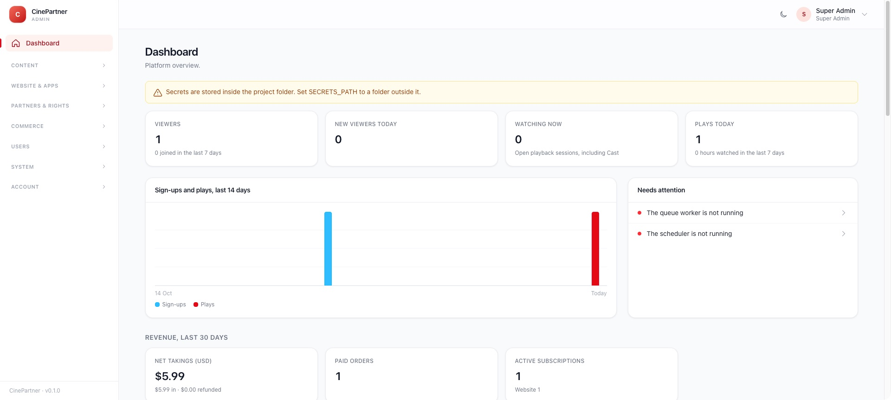
- Visit
https://yourdomain.com— you should see the CinePartner home page. - Visit
https://yourdomain.com/admin— sign in with the Super Admin credentials. - In Admin → Dashboard, check that there are no warnings.
- In Admin → System → Jobs & Health, verify the scheduler heartbeat is green.
Demo Mode & Credentials
CinePartner ships with a demo seeder that populates the platform with sample users, content, plans and settings so you can explore every feature immediately after installation.
Enable demo mode
During development or evaluation, run:
php artisan db:seed --class=DemoSeederThe seeder runs only when APP_ENV is local or testing. To run it on a staging server, add DEMO_MODE=true to your .env first.
Demo accounts
New demo viewer, partner and staff accounts use DemoPass2026. Existing accounts keep their passwords. The Super Admin password follows the exception below.
| Role | |
|---|---|
| Viewer (subscriber) | viewer@cinepartner.test |
Admin panel accounts
| Role | |
|---|---|
| Super Admin | CINEPARTNER_ADMIN_EMAIL from .env (default: admin@cinepartner.test) |
| Content Manager | content-manager@cinepartner.test |
| Content Reviewer | content-reviewer@cinepartner.test |
| Rights Reviewer | rights-reviewer@cinepartner.test |
| Publisher | publisher@cinepartner.test |
| Finance Manager | finance-manager@cinepartner.test |
| Finance Approver | finance-approver@cinepartner.test |
| Support | support@cinepartner.test |
| Marketing Analyst | marketing-analyst@cinepartner.test |
Partner studio accounts (Demo Pictures Ltd.)
| Role | |
|---|---|
| Studio Owner | owner@partner.cinepartner.test |
| Studio Manager | manager@partner.cinepartner.test |
| Studio Editor | editor@partner.cinepartner.test |
| Studio Finance | finance@partner.cinepartner.test |
CINEPARTNER_ADMIN_EMAIL; it does not create a separate super-admin@cinepartner.test account. If CINEPARTNER_ADMIN_PASSWORD is empty, it sets that configured account to the public demo password. Use demo seeding only on a separate local/staging installation; never run it on a live buyer site.
cPanel (Limited Mode)
CinePartner supports cPanel hosting in limited mode:
- Database queue/cache: set
QUEUE_CONNECTION=database,SESSION_DRIVER=databaseandCACHE_STORE=database(no Redis). - Managed video provider only: self-managed packaging (FFmpeg) is not available.
- Reduced concurrency: cron runs every minute; use a lock so only one worker process runs at a time.
- No Supervisor: use the cPanel cron job to start the worker.
Add these cron jobs in cPanel → Cron Jobs:
* * * * * cd /home/user/cinepartner && php artisan schedule:run >> /dev/null 2>&1
* * * * * cd /home/user/cinepartner && flock -n /home/user/cinepartner/storage/queue-worker.lock php artisan queue:work database --queue=payments,playback,notifications,campaigns,default,media,finance,bulk --stop-when-empty --max-time=50 --tries=3 >> storage/logs/worker.log 2>&1In cPanel → Domains, point your domain's document root to /home/user/cinepartner/public. Select PHP 8.4+ with all required extensions, create a MySQL database/user using the hosting panel and use its full prefixed names in .env. Set SECRETS_PATH=/home/user/cinepartner-secrets and create that private directory outside the app. Use the host's PHP CLI path in cron. Confirm SSH/Terminal, symlinks, outbound HTTPS and flock are supported; if persistent jobs or locking are unavailable, use a VPS for reliable background processing.
Troubleshooting
| Problem | Solution |
|---|---|
| 500 error after install | Check storage/logs/laravel.log; ensure storage/ and bootstrap/cache/ are writable |
| Scheduler not running | Verify the cron entry; check Admin → System → Jobs & Health for the heartbeat |
| Queue jobs stuck | Restart workers: sudo supervisorctl restart cinepartner-worker:* |
| Uploads fail | Check client_max_body_size in Nginx and upload_max_filesize / post_max_size in PHP |
| Web viewer styles or scripts not loading | Run npm run build and check that public/build/manifest.json exists |
| Redis connection refused | Verify Redis is running: redis-cli ping |
Admin Panel: Features
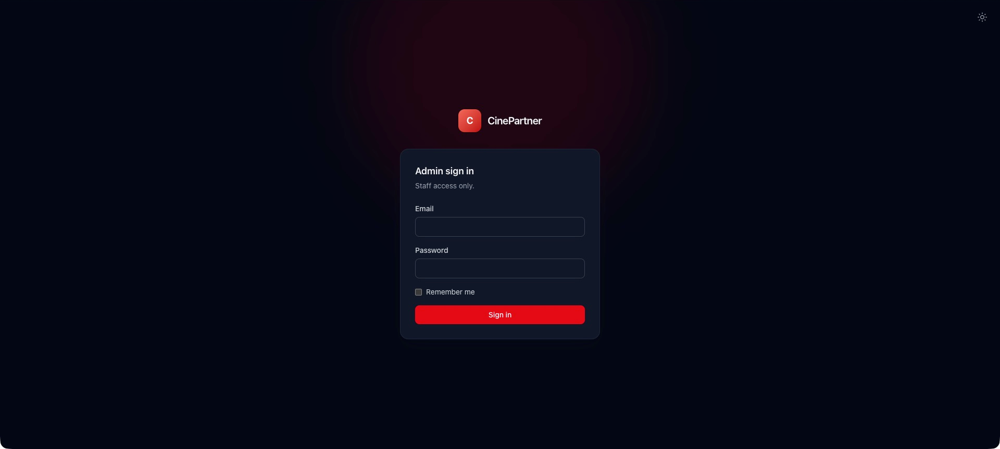
The CinePartner admin panel is a comprehensive management interface for operating your streaming platform. Access it at https://yourdomain.com/admin.
Dashboard
The dashboard provides a real-time overview of your platform's key metrics:
- Viewers: Total registered viewers
- New Viewers: Registrations in the current period
- Watching Now: Active concurrent streams
- Plays: Total play events
Charts show viewership trends, recent activity, and system alerts.
Catalog Management
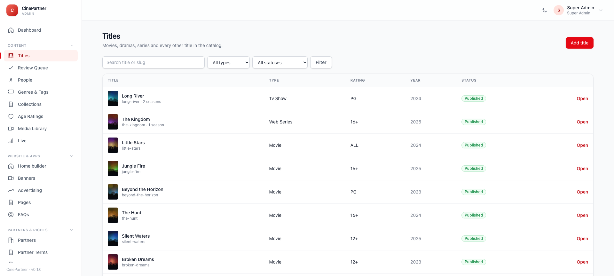
Manage all content through the catalog system. CinePartner supports movies, series (with seasons and episodes), shorts, specials and documentaries.
Publish Your First Video
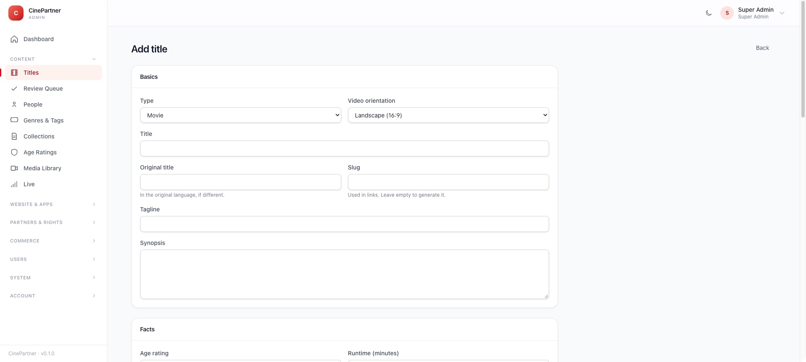
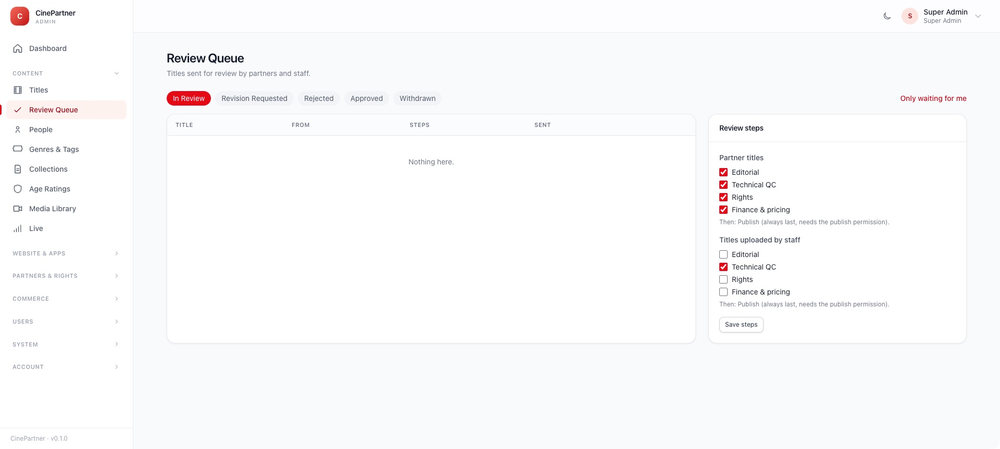
Use a short video and artwork you own or are licensed to publish. Start on a staging installation so you can verify playback before launch.
- Select a video provider: open System → Video. Choose Self-managed HLS only on a server with working FFmpeg/FFprobe and background workers; otherwise configure Cloudflare Stream using your account ID, customer code, API token and webhook secret. Save and test the selected provider.
- Create the title: open Content → Titles → Add title. Choose Movie for a single video, enter Title, Synopsis, language and age rating, then click Create title. A draft is created; it is not public yet.
- Add artwork and media: open the saved title's wizard. Upload the requested poster/backdrop artwork. For a series, create its season and episode first and attach the main video to that episode. Upload a main video and wait for its processing state to become Ready in Media Library.
- Set access: use the title's Access & offers settings. For a simple playback test, choose free access where permitted; for paid access, configure the relevant plan/offer and store mapping. Partner titles also require approved rights for the target country, platform and access mode.
- Send for review: submit the draft from its wizard. Open Content → Review Queue and complete the required checks. Staff titles default to Technical QC followed by Publish; partner titles also require Editorial, Rights and Finance checks. Your configured review steps can differ.
- Publish: a user with publish permission publishes after checks pass. Add the title to a Home builder rail if you want it featured on the homepage.
- Verify as a viewer: open the website or configured app with a viewer account in an allowed country. Find the title, play it, seek, test audio/subtitles and confirm paid access behaves as expected. If it is missing, check status, playable media, rights, availability dates and access rules.
Content Workflow
| Stage | Role | Action |
|---|---|---|
| Draft | Content Manager | Create title, add metadata, upload video |
| Editorial Review | Content Reviewer | Review metadata quality, descriptions, artwork |
| Technical Review | Content Reviewer | Verify video quality, audio sync, subtitles |
| Rights Review | Rights Reviewer | Confirm licensing, territory restrictions |
| Finance Review | Finance Manager | Approve pricing, revenue share terms |
| Ready to Publish | Publisher | Set release date, publish to platform |
Metadata
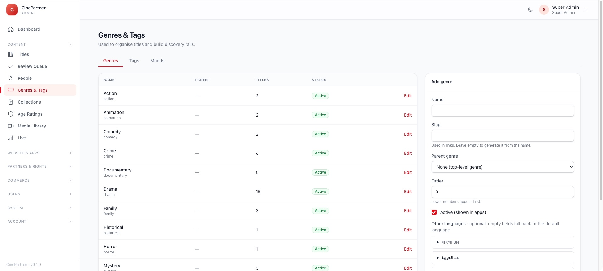
- Genres & Tags: Hierarchical genre taxonomy and free-form tags for discovery.
- People: Cast and crew with roles (director, actor, producer, etc.).
- Age Ratings: Configurable rating systems (MPAA, BBFC, custom).
- Collections: Curated groups of titles for editorial promotion.
Media & Video
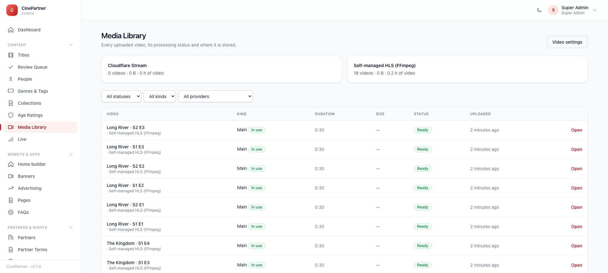
The Media Library manages all video assets. CinePartner supports two video providers:
- Cloudflare Stream: Upload via the admin panel, automatic transcoding and global delivery.
- Self-managed (FFmpeg): On-server HLS packaging with a configurable quality ladder (360p to 4K).
Video processing happens in background jobs. Monitor progress in Admin → Media Library. Each video shows its processing status, available qualities and playback readiness.
Live TV & Events
- Live TV Channels: Create channels with an EPG (Electronic Programme Guide). Import schedules via XMLTV files.
- Live Events / PPV: Schedule events with ticketing, set reminder notifications, enable live chat and configure replay availability after the event ends.
CMS (Content Management)
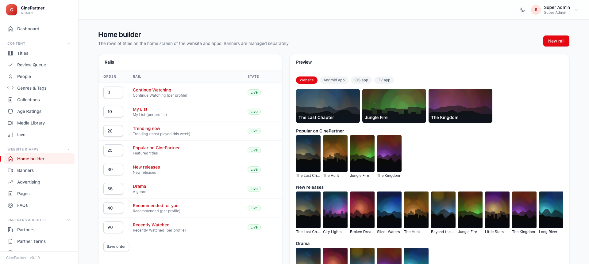
The CMS controls what viewers see on the home page and category pages:
- Home Builder: Drag-and-drop rail editor. Create hero banners, curated rows, "Continue Watching", "New Releases" and genre-based rails.
- Banners: Promotional banners with deep links to titles, plans or external URLs.
- Pages: Static pages (About, Terms, Privacy Policy, FAQ) with a rich text editor.
Commerce & Plans
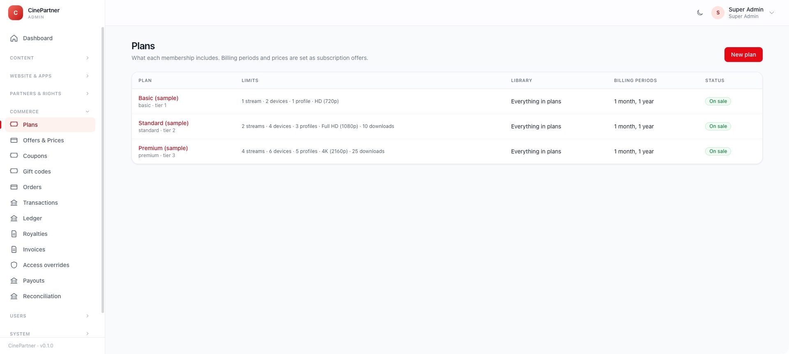
Configure subscription plans, rentals, purchases and promotional offers:
- Plans (SVOD): Create tiered subscription plans with trials, grace periods, screen limits and download quotas.
- Rentals & Purchases (TVOD): Set rental windows and purchase prices per title.
- Gift Codes: Generate redeemable codes for plans or credits.
- Coupons: Percentage or fixed-amount discounts with usage limits and expiry dates.
- SKU Catalog: Map internal plans to Google Play and Apple store product IDs.
Finance
Royalties
The royalty engine calculates partner earnings automatically:
- SVOD pool-based: Revenue is distributed based on each partner's share of total viewing minutes.
- TVOD per-transaction: Revenue share applied directly to each rental or purchase.
Monthly royalty periods follow a workflow: Draft → Review → Closed.
Payouts
Process partner payouts with dual-approval workflow. Supported payout methods: bank transfer and mobile money. Generate PDF statements for each partner with the dompdf library.
Ledger
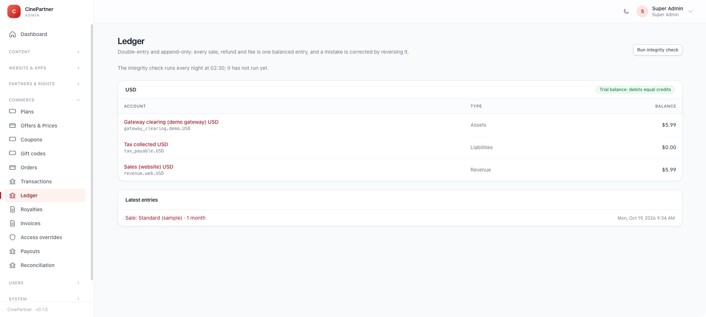
All financial transactions are recorded in a double-entry ledger with hash-chain integrity verification. View detailed transaction history and run integrity checks from Admin → Commerce → Ledger.
Partners
Manage content partners (studios, distributors, independent creators):
- KYB Onboarding: Partners submit business documents for verification.
- Organization Management: Partners manage their own team members with role-based access.
- Content Pipeline: Partners submit content through the review workflow.
- Statements: Partners view their earnings and download PDF statements from the partner portal.
Rights Management
Control content availability by territory, platform and time window:
- Contracts: Define license terms — license fee, revenue share, minimum guarantee or hybrid.
- Rights Windows: Set start/end dates with territory and platform restrictions.
- Automatic Enforcement: CinePartner automatically rebuilds content availability when rights windows change. Expired rights are removed from the catalog without manual intervention.
Advertising (AVOD)
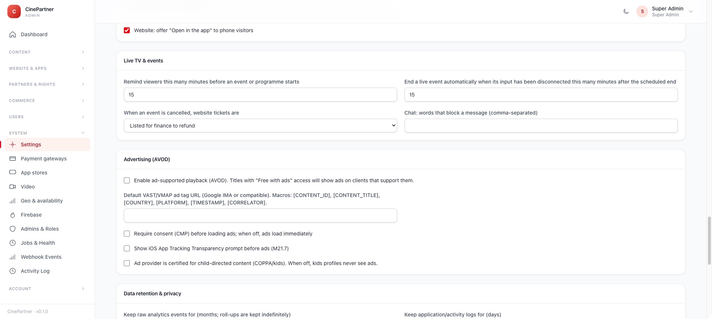
Configure ad-supported playback from Admin → Settings → Advertising:
- Enable/disable ads globally
- Default VAST/VMAP tag URL: Set the ad tag from your ad network (Google Ad Manager, etc.)
- Consent management: Require viewer consent before serving targeted ads
- iOS ATT prompt: Show Apple's App Tracking Transparency dialog on iOS
- Kids protection: Disable personalized ads for kids profiles (COPPA compliance)
All ad settings are fully configurable from the admin panel — no code changes required.
Marketing
- Push Campaigns: Send targeted push notifications to audience segments. Supports scheduling, landing page links, and A/B testing.
- Landing Pages: Create promotional pages with custom URLs for campaigns.
- Referral Program: Configure referral rewards (free days, credits) for viewers who invite friends.
- A/B Experiments: Test different messaging, pricing or UI variants with measurable outcomes.
User Management
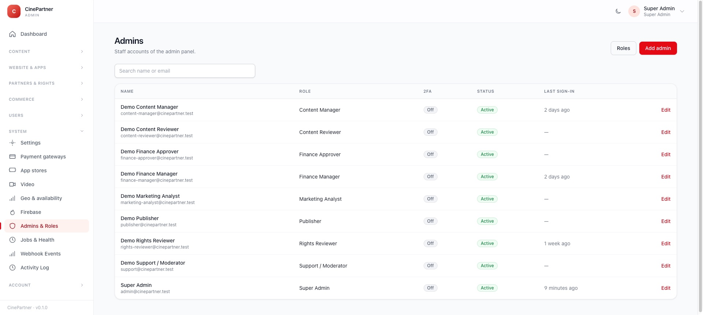
- Viewer accounts: Search, view profiles, manage subscriptions, issue refunds.
- Support tickets: Built-in ticket system with SLA tracking, canned responses and internal notes.
- Content moderation: Review star ratings and text reviews in a pre-moderation queue.
- Sanctions: Warn, suspend or ban viewers for policy violations.
Analytics
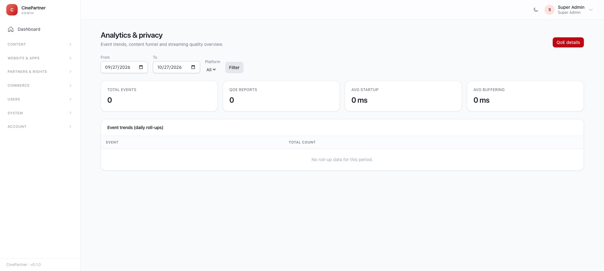
Consent-gated analytics with a 15-event catalog:
- Audience metrics: MAU, DAU, retention cohorts, churn rate
- Content performance: Play counts, completion rates, trending titles
- Revenue metrics: MRR, ARPU, plan distribution, conversion funnel
- QoE telemetry: Buffering ratio, startup time, bitrate distribution
Reports can be exported as CSV or PDF. Raw events are retained for a configurable period (default: 13 months), while daily roll-ups are kept indefinitely.
Operations
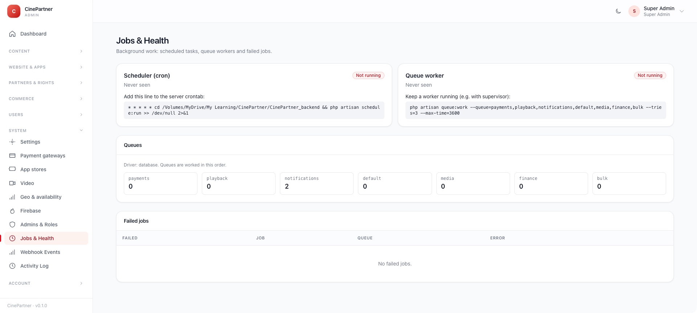
- Scheduler heartbeat: Visual indicator that the cron scheduler is running.
- Queue monitoring: View pending, processing and failed jobs.
- System health: Redis, database and storage status checks.
- Data export: GDPR data export requests and account deletion with pseudonymization.
- Privacy consent: Manage consent categories and viewer preferences.
Settings
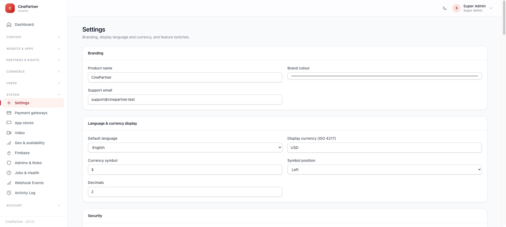
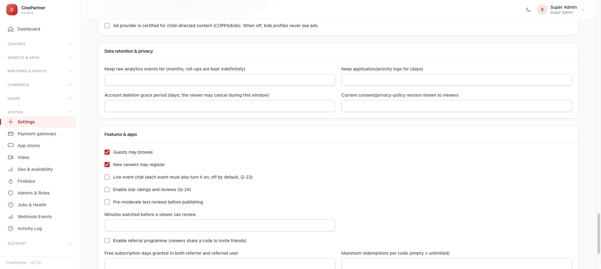
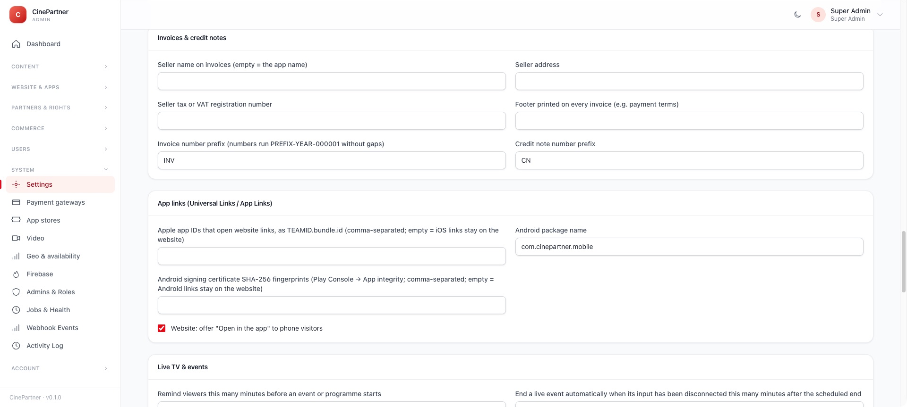
The Settings panel (Admin → Settings) covers 15 configurable sections:
| Section | What It Controls |
|---|---|
| General / Branding | Product name, brand color, support email, logo |
| Localization | Default language, currency display, symbol position, decimals |
| Security | Password rules, session lifetime, 2FA enforcement, login throttle |
| Rights | Default availability rules, territory restrictions |
| Playback | Concurrent stream limit, lease duration, quality caps |
| Appearance | Theme settings, home layout preferences |
| Royalties | SVOD pool methodology, TVOD revenue share defaults |
| Payouts | Payout methods, minimum thresholds, approval workflow |
| Commerce | Free trial defaults, grace periods, invoice settings |
| Invoice | Invoice numbering, tax display, company details |
| App Links | Universal Links (iOS) and App Links (Android) configuration |
| Live | Live streaming defaults, chat moderation, event settings |
| Ads | AVOD toggle, VAST tag, consent, ATT prompt, kids protection |
| Retention | Analytics data retention periods, purge schedules |
| Features | Feature flags for downloads, reviews, watchlist, etc. |
Roles & Permissions
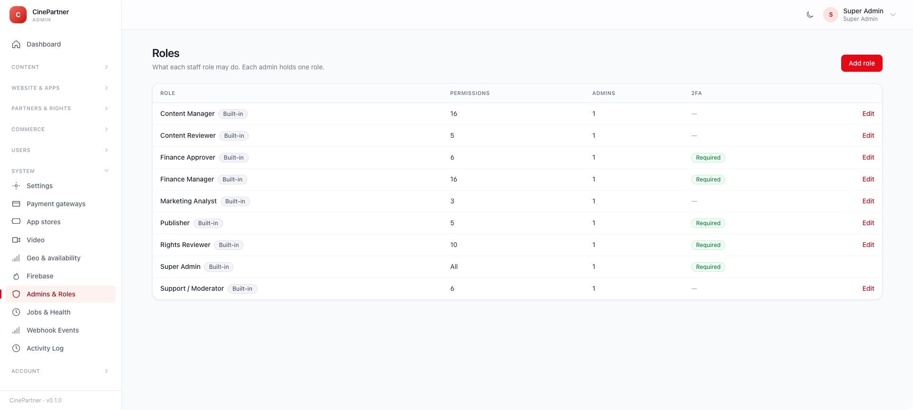
CinePartner ships with these built-in roles:
| Role | Access Level |
|---|---|
| Super Admin | Full access to everything |
| Content Manager | Create and edit titles, manage metadata |
| Content Reviewer | Review and approve content submissions |
| Rights Reviewer | Review rights and territory compliance |
| Publisher | Publish approved content to the platform |
| Finance Manager | View revenue, manage royalties and invoices |
| Finance Approver | Approve payouts (dual-approval workflow) |
| Support | Handle support tickets and viewer issues |
| Marketing Analyst | Manage campaigns, view analytics |
Custom roles can be created with granular permissions. Assign specific capabilities to match your organization's workflow.
Web Viewer
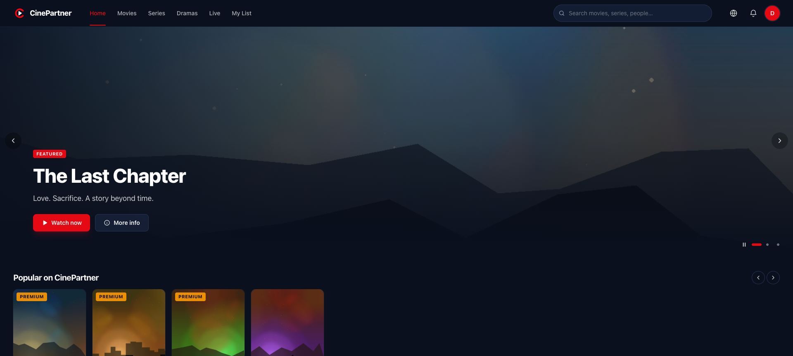
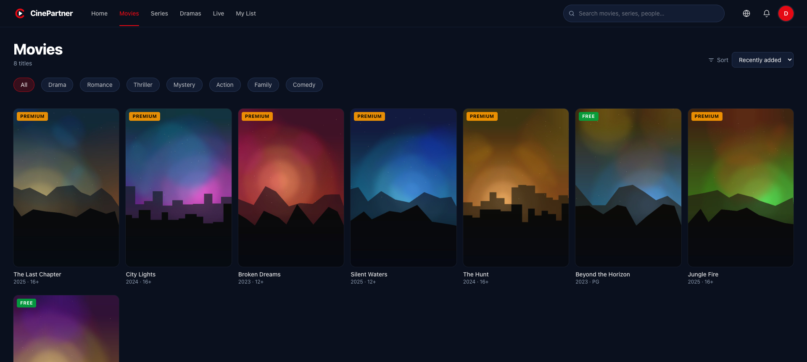
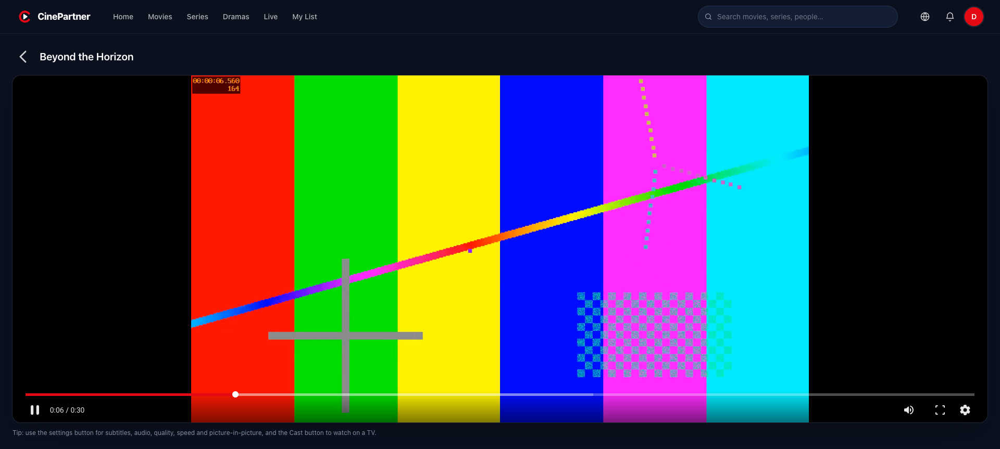
cinepartner:demo-media), with the playback controls shown on hover. · Open full-size image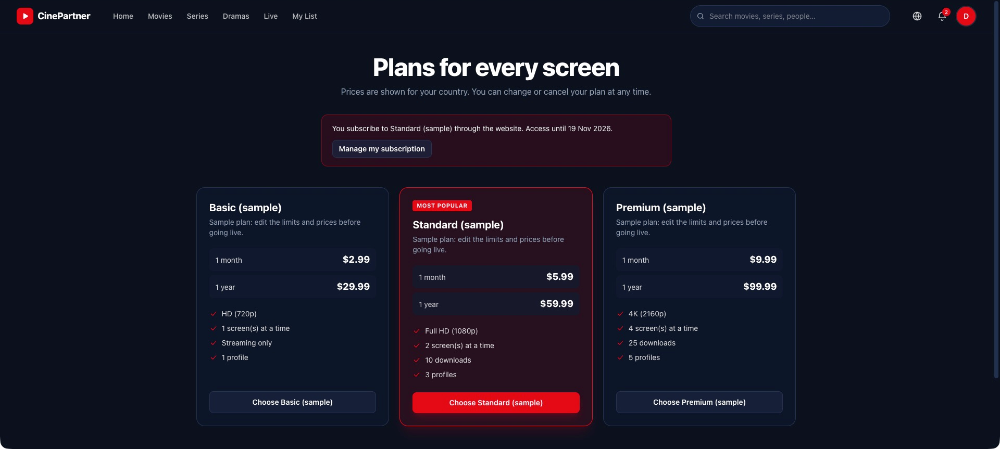
The web viewer is the public website for your viewers. It is part of the backend (Laravel Blade, Tailwind CSS and Alpine.js), so it is live as soon as the backend is installed and shares the catalog, plans and accounts with the apps.
The release already includes the compiled assets in public/build/. Rebuild them only after you change the source styles or scripts:
cd CinePartner_backend
npm ci
npm run buildAdmin Panel: Firebase
Firebase powers push notifications (Firebase Cloud Messaging, FCM) in CinePartner. In this section you create the Firebase project and connect it to the admin panel. You register each app in the same project later, in Android App → Step 4 and iOS App → Step 2.
Step 1: Create a Firebase Project
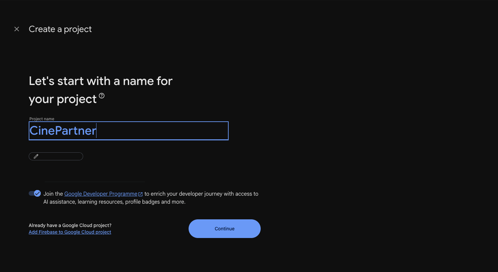
- Go to the Firebase Console.
- Click Add project and give it a name (e.g., "CinePartner").
- Enable or disable Google Analytics as you prefer.
- Click Create project.
Step 2: Create a Service Account Key
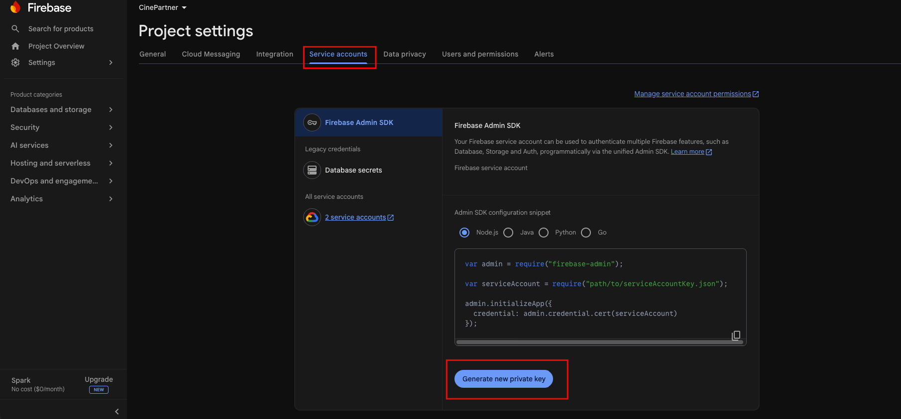
- Go to Project Settings → Service accounts.
- Click Generate new private key. A JSON file downloads to your computer; you upload it in the next step.
Step 3: Upload the Key in the Admin Panel
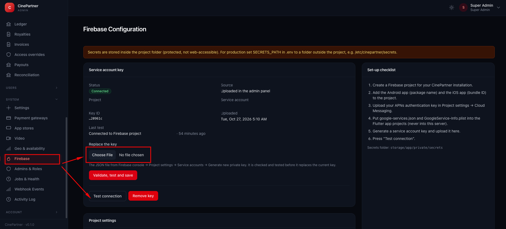
- Sign in to the admin panel as the Super Admin and open System → Firebase.
- Under Service account key, click Choose File and select the JSON file from Step 2.
- Click Validate, test and save. CinePartner checks the file and connects to Firebase before it saves the key.
- Under Project settings, check that the Firebase project ID matches the project your
google-services.jsonandGoogleService-Info.plistfiles come from, then click Save.
The key is stored encrypted (with your APP_KEY) in the secrets folder and is never shown again. In production, set SECRETS_PATH in .env to a folder outside the project, for example /etc/cinepartner/secrets; while it is empty, CinePartner uses the protected folder storage/app/private/secrets.
.env:
FIREBASE_CREDENTIALS=/etc/cinepartner/secrets/firebase-adminsdk.json
FIREBASE_PROJECT_ID=your-project-idStep 4: Test the Connection
- In Admin → System → Firebase, click Test connection and confirm the status shows Connected.
- Check that Send push notifications is turned on.
The server side is now ready. Register the apps and send a test notification to a device in Android App → Push Notifications and iOS App → Push Notifications.
Troubleshooting
| Problem | Solution |
|---|---|
| Push notifications not received | In Admin → System → Firebase, press Test connection and check that Send push notifications is on. Check that the app was rebuilt after adding its Firebase file, and that notifications are allowed in the device settings. See the Android and iOS troubleshooting tables for device checks. |
| Invalid credentials error | Generate a new private key and upload it again; check that the Firebase project ID matches the project of the app config files |
Android App
This section sets up, builds and publishes the two Android apps: the CinePartner mobile app for Android phones and tablets, and the TV app for Android TV / Google TV. Complete the Admin Panel installation and Firebase setup first. The iOS version of the mobile app is covered in the iOS App section.
CinePartner ships two Flutter projects:
| App | Directory | Platforms |
|---|---|---|
| Mobile | CinePartner_mobile/ | Android & iOS |
| TV | CinePartner_tv/ | Android TV / Google TV |
Both apps share a common package at packages/cinepartner_core/ (an identical copy inside each app) that holds networking, theming and all shared logic.
Requirements
| Tool | Version | Purpose |
|---|---|---|
| Flutter SDK / Dart | Flutter 3.44.4 with Dart 3.12.2 (installed reference toolchain) | Builds the mobile and TV apps |
| Android Studio | Latest | Android SDK, emulators and the Flutter run configuration |
| Java JDK | 17 | Android Gradle builds |
The shared core requires Flutter >=3.44.0 and Dart ^3.12.2. The versions above were read from the local toolchain, not a claim that all store builds were re-tested. Check yours with flutter --version, flutter doctor -v and java -version. Android compiles against SDK 37; install that platform with Android Studio's SDK Manager. The apps run on Android 7.0 (API 24) and later.
Step 1: Install Dependencies
Open a terminal in each app directory and install the Flutter packages:
cd CinePartner_mobile
flutter pub getcd CinePartner_tv
flutter pub getThis also resolves the local cinepartner_core package in each app's packages/ directory.
Step 2: Change the Mobile Application ID
The default application ID is com.cinepartner.mobile. Replace it with your own identifier (for example com.yourcompany.streaming).
1. Update build.gradle.kts
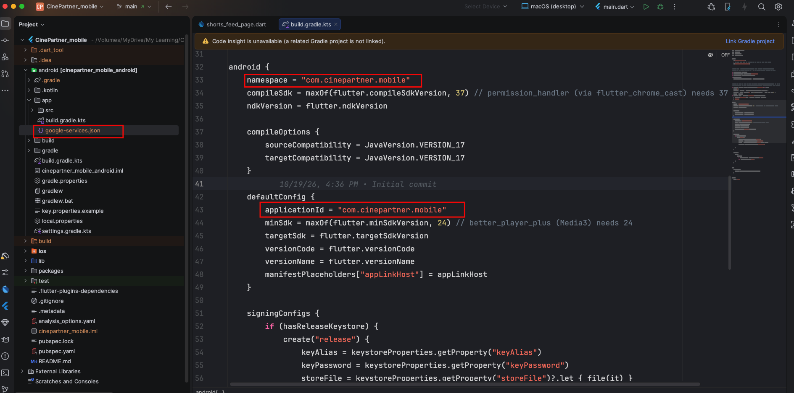
android/app/build.gradle.kts: replace both marked values, namespace (line 33) and applicationId (line 43). The marked google-services.json in android/app/ is the Firebase file you add in Step 4. Continue with the Kotlin package steps below; changing only the display name does not change the application ID. · Open full-size imageOpen:
android/app/build.gradle.ktsUpdate both values:
android {
namespace = "com.yourcompany.streaming"
...
defaultConfig {
applicationId = "com.yourcompany.streaming"
...
}
}2. Rename the Kotlin directory
The Kotlin source directory must match the new package name. Rename the directory path:
android/app/src/main/kotlin/com/cinepartner/mobile/to:
android/app/src/main/kotlin/com/yourcompany/streaming/3. Update MainActivity.kt
Open MainActivity.kt (now in the renamed directory) and update the first line:
package com.yourcompany.streaming
import io.flutter.embedding.android.FlutterActivity
class MainActivity : FlutterActivity()4. Update AndroidManifest.xml
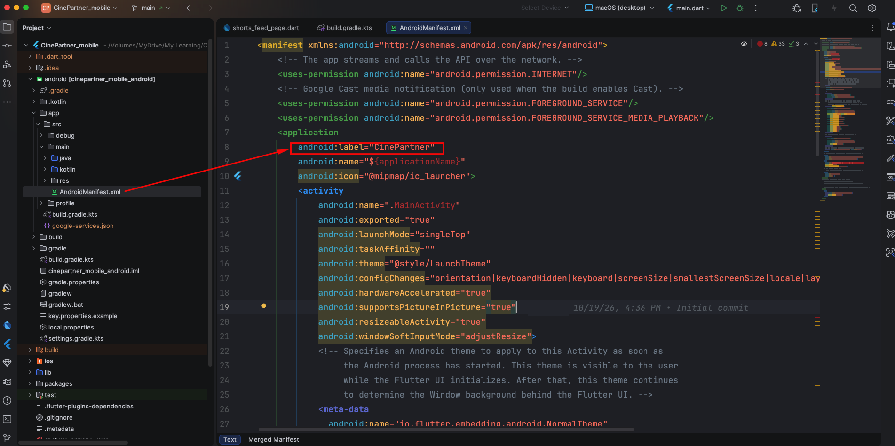
android/app/src/main/AndroidManifest.xml; android:label is the app name shown under the launcher icon · Open full-size imageOpen android/app/src/main/AndroidManifest.xml and update the app label to your brand name:
<application
android:label="Your App Name"
...>Step 3: Change the TV Application ID
The default TV application ID is com.cinepartner.tv. The process is the same as the mobile app.
1. Update build.gradle.kts
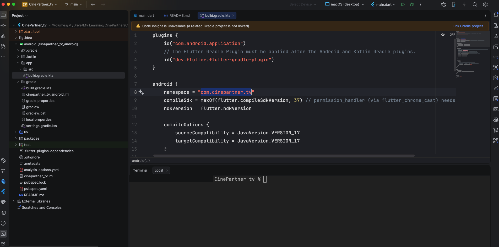
android/app/build.gradle.kts: namespace on line 8 is com.cinepartner.tv. Replace it and applicationId further down the same file · Open full-size imageOpen:
CinePartner_tv/android/app/build.gradle.ktsUpdate both values:
android {
namespace = "com.yourcompany.tv"
...
defaultConfig {
applicationId = "com.yourcompany.tv"
...
}
}2. Rename the Kotlin directory
CinePartner_tv/android/app/src/main/kotlin/com/cinepartner/tv/to:
CinePartner_tv/android/app/src/main/kotlin/com/yourcompany/tv/3. Update MainActivity.kt
package com.yourcompany.tv
import io.flutter.embedding.android.FlutterActivity
class MainActivity : FlutterActivity()4. Update AndroidManifest.xml
Update the app label in CinePartner_tv/android/app/src/main/AndroidManifest.xml:
<application
android:label="Your TV App Name"
...>Step 4: Register the Android Apps in Firebase
Open the Firebase project you created in Admin Panel: Firebase and add one Android app for each Flutter project. Each app gets its own google-services.json.
Android (Mobile)
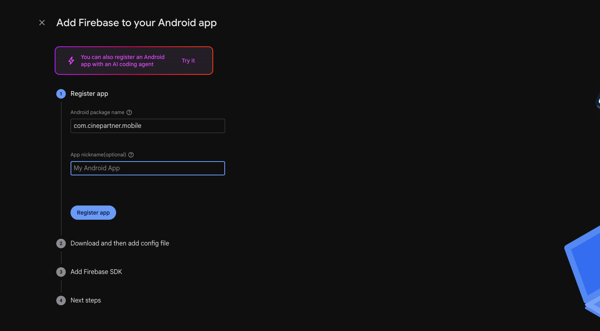
com.cinepartner.mobile · Open full-size image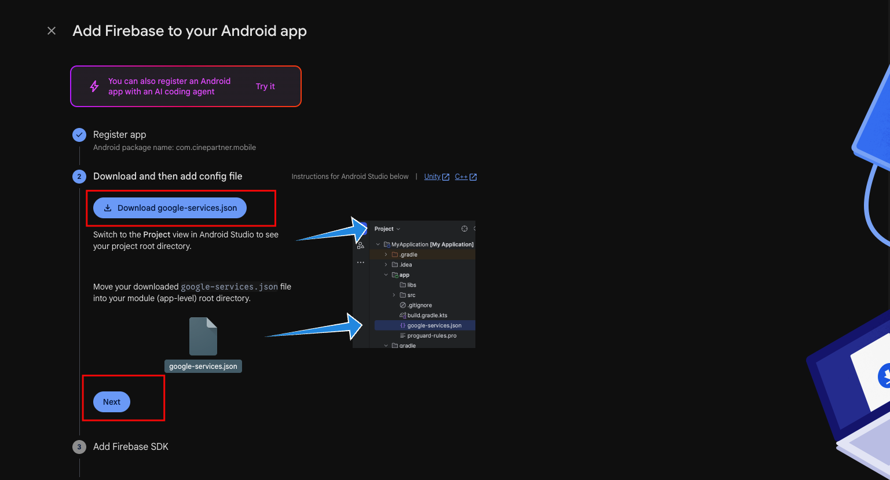
google-services.json and place it in android/app/ · Open full-size image
google-services.json placed in the mobile app's android/app/ directory · Open full-size image- In the Firebase console, click the Android icon to add an app.
- Enter the mobile application ID from Step 2 (default
com.cinepartner.mobile). - Download
google-services.jsonand place it inCinePartner_mobile/android/app/.
Android (TV)
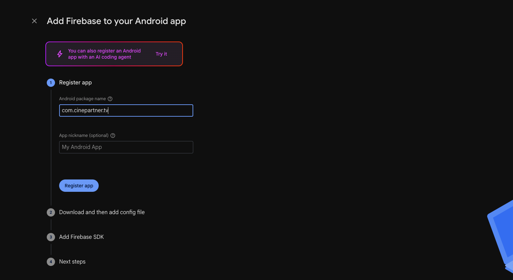
com.cinepartner.tv · Open full-size image- Click Add app and register a second Android app with the TV application ID from Step 3 (default
com.cinepartner.tv). - Download
google-services.jsonand place it inCinePartner_tv/android/app/.
google-services.json or GoogleService-Info.plist to a public repository. These files are listed in .gitignore.
Step 5: Configure the Backend URL
The apps read the API server address at build time via --dart-define. In development, the app defaults to the local emulator address (10.0.2.2:8000 on Android, 127.0.0.1:8000 on iOS).
Set the base URL in Android Studio (Mobile and TV)
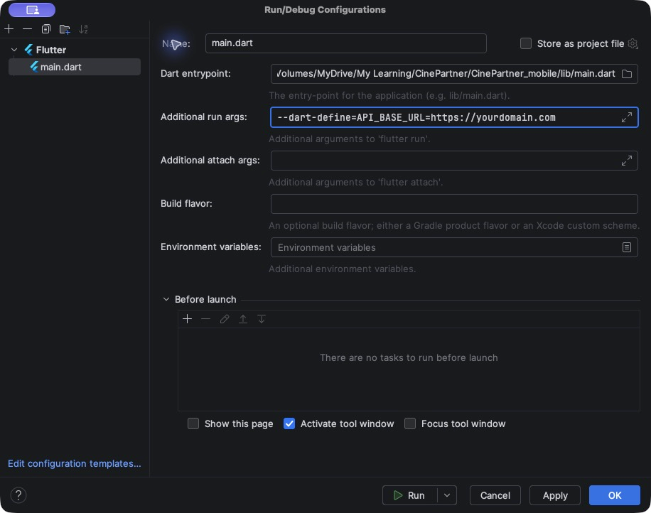
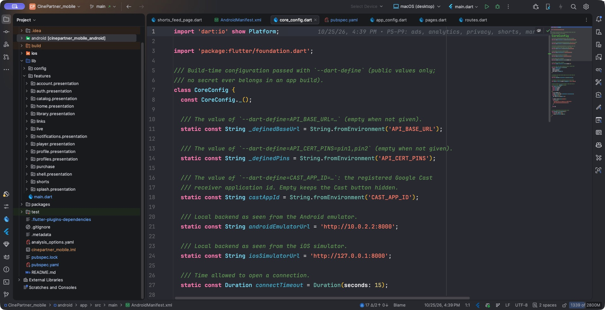
packages/cinepartner_core/lib/core/config/core_config.dart. The API_BASE_URL key reads your run/build argument; the local emulator addresses are development fallbacks. · Open full-size image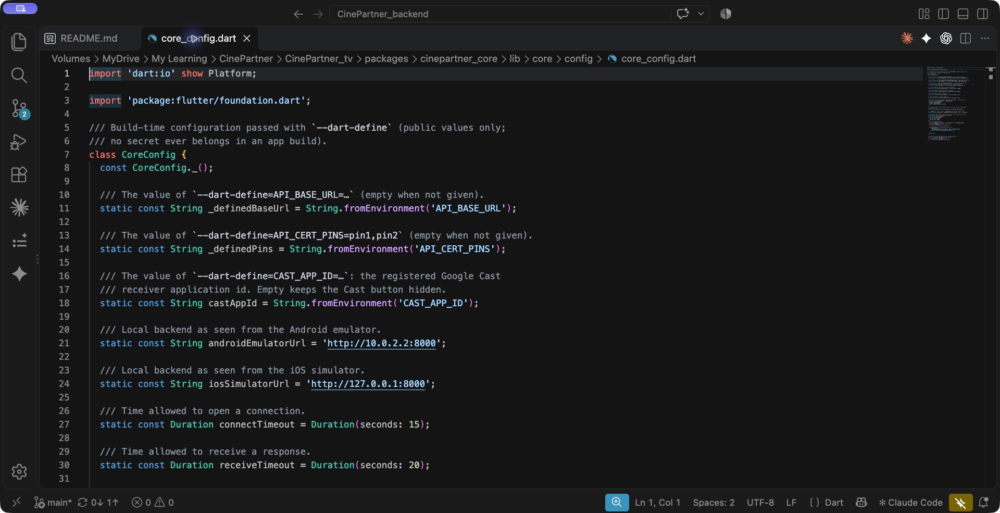
packages/cinepartner_core/lib/core/config/core_config.dart. Supply --dart-define=API_BASE_URL=https://yourdomain.com when running/building this project too. Keep the key name unchanged. · Open full-size image- Open
CinePartner_mobileas a Flutter project in Android Studio. From the run configuration dropdown beside the Run button, choose Edit Configurations…. - Select the Flutter configuration for
lib/main.dart. In Additional run args, enter--dart-define=API_BASE_URL=https://yourdomain.com, replacing the example domain with your backend's actual HTTPS address. Keep any other required arguments, separated by spaces. - Click Apply → OK, stop the running app, then run it again. A hot reload does not apply a changed build-time URL.
- Open
CinePartner_tvas a separate Flutter project and repeat the same steps for its ownlib/main.dartconfiguration. Saving the Mobile configuration does not update the TV configuration.
| Flutter project | Configuration source (relative to that project) |
|---|---|
CinePartner_mobile | packages/cinepartner_core/lib/core/config/core_config.dart |
CinePartner_tv | packages/cinepartner_core/lib/core/config/core_config.dart |
Both files read String.fromEnvironment('API_BASE_URL'). Keep the API_BASE_URL key unchanged and supply your address through the run/build argument. Enter only the server origin (for example https://stream.example.com), without /api/v1. Android Studio run arguments apply to that IDE configuration; supply the argument again for terminal builds as shown below.
Terminal example for each app
From the folder containing both Flutter projects, run one block at a time:
# Mobile
cd CinePartner_mobile
flutter run --dart-define=API_BASE_URL=https://yourdomain.com# TV (start from the folder containing both projects)
cd CinePartner_tv
flutter run --dart-define=API_BASE_URL=https://yourdomain.comDevelopment (local backend)
No configuration needed. Run the app and it connects to your local server automatically:
flutter runProduction (remote server)
Pass your server URL when building:
flutter build apk --release \
--dart-define=API_BASE_URL=https://yourdomain.comflutter build appbundle --release \
--dart-define=API_BASE_URL=https://yourdomain.comflutter build ios --release \
--dart-define=API_BASE_URL=https://yourdomain.comhttps:// URL. The app throws a StateError at launch if you pass an HTTP URL in release mode.
The configuration is in packages/cinepartner_core/lib/core/config/core_config.dart. The URL resolution order is:
--dart-define=API_BASE_URL=…(highest priority)- iOS simulator default:
http://127.0.0.1:8000 - Android emulator default:
http://10.0.2.2:8000
Step 6: Change the App Icon & Splash Screen
Both apps ship with the CinePartner icon already generated for every size. Replace it, and optionally add a splash screen, with your own branding before publishing. Two Flutter packages generate all required sizes for Android and iOS from a single source image.
1. Prepare Your Source Images
| Asset | Recommended Size | Format | Notes |
|---|---|---|---|
App icon (icon.png) | 1024×1024 px | PNG | Full-bleed square with no transparency (iOS rejects alpha); platforms round the corners |
Adaptive icon foreground (icon_foreground.png) | 1024×1024 px | PNG | Transparent background; keep the logo inside the centre 60% so Android's masks never crop it |
| Splash logo | 1152×1152 px | PNG | Transparent background, centered logo |
| TV banner | 640×360 px (320×180 dp) | PNG | Android TV home screen banner; include your app name |
Each app keeps its icon sources in assets/branding/ (icon.png and icon_foreground.png). Replace both files with your own, keeping the same names. Put a splash image at assets/splash.png if you add one.
2. Add Packages (Mobile App)
Open a terminal in CinePartner_mobile/ and resolve the existing icon and splash dev dependencies. Only use the add commands if you previously removed them:
cd CinePartner_mobile
flutter pub add flutter_launcher_icons --dev
flutter pub add flutter_native_splash --dev3. Generate the App Icon (Mobile App)
This configuration is already at the bottom of CinePartner_mobile/pubspec.yaml. Change adaptive_icon_background to your brand's background colour:
flutter_launcher_icons:
android: true
ios: true
image_path: "assets/branding/icon.png"
min_sdk_android: 24
remove_alpha_ios: true
adaptive_icon_background: "#0B1020"
adaptive_icon_foreground: "assets/branding/icon_foreground.png"
adaptive_icon_foreground_inset: 0 # the source is already sized to the safe zoneThen generate all icon sizes:
dart run flutter_launcher_iconsThis generates all required icon files for both Android (mipmap-mdpi through mipmap-xxxhdpi) and iOS (AppIcon.appiconset) automatically.
4. Configure the Splash Screen (Mobile App)
Add the following configuration to the bottom of CinePartner_mobile/pubspec.yaml:
flutter_native_splash:
color: "#0a0e17"
image: "assets/splash.png"
android_12:
color: "#0a0e17"
image: "assets/splash.png"
ios: true
web: falseThen generate the splash screen:
dart run flutter_native_splash:createThis updates launch_background.xml (Android), LaunchScreen.storyboard and LaunchImage assets (iOS) automatically.
#0a0e17 to your brand's background color. The android_12 section handles the Android 12+ splash screen API. Set web: false because CinePartner's web frontend has its own splash.
5. Add Packages (TV App)
Repeat the same steps for the TV app:
cd CinePartner_tv
flutter pub add flutter_launcher_icons --dev
flutter pub add flutter_native_splash --dev6. Generate the App Icon (TV App)
The TV app has the same configuration at the bottom of CinePartner_tv/pubspec.yaml, without iOS:
flutter_launcher_icons:
android: true
ios: false
image_path: "assets/branding/icon.png"
min_sdk_android: 24
adaptive_icon_background: "#0B1020"
adaptive_icon_foreground: "assets/branding/icon_foreground.png"
adaptive_icon_foreground_inset: 0Generate the icons:
dart run flutter_launcher_icons7. Replace the TV Banner
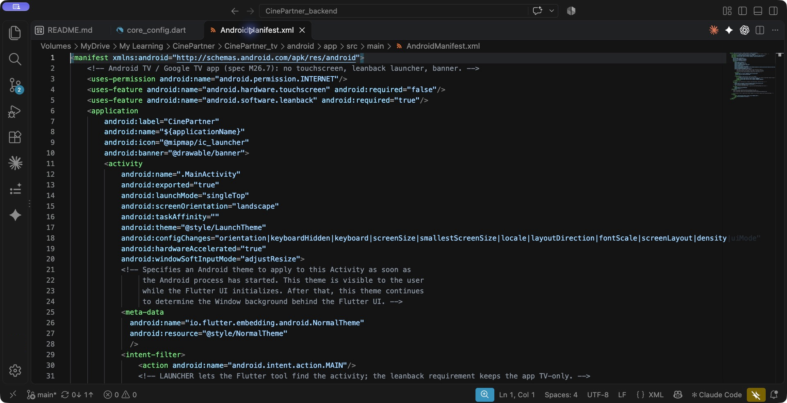
android/app/src/main/AndroidManifest.xml: change android:label for your brand. The android:banner="@drawable/banner" entry uses the banner file above. Keep the TV leanback requirement and touchscreen setting; generate the app icon using sub-step 6. · Open full-size imageCinePartner_tv/android/app/src/main/res/drawable-xhdpi/banner.png
8. Configure the Splash Screen (TV App)
Add to the bottom of CinePartner_tv/pubspec.yaml:
flutter_native_splash:
color: "#0a0e17"
image: "assets/splash.png"
android_12:
color: "#0a0e17"
image: "assets/splash.png"
ios: false
web: falseGenerate the splash screen:
dart run flutter_native_splash:createVerify Your Changes
After generating the icons and splash screen, verify they look correct:
- Run the mobile app:
flutter runinCinePartner_mobile/— you should see your custom splash screen followed by the app with your icon. - Run the TV app:
flutter runinCinePartner_tv/— check both the app icon and the leanback banner on the Android TV home screen. - Check all icon sizes were generated: look inside
android/app/src/main/res/mipmap-*/andios/Runner/Assets.xcassets/AppIcon.appiconset/.
Step 7: Push Notifications
Android needs no extra setup: Firebase Cloud Messaging works as soon as google-services.json is in place (Step 4) and the server key is uploaded (Admin Panel: Firebase). Notifications use the small white icon in android/app/src/main/res/drawable/ic_stat_notification.xml; replace it with your own white-on-transparent icon to match your brand.
Verify push on Android
- Rebuild and open the mobile app, sign in, and tap Allow when it asks to send notifications (Android 13 and later). The app registers the device with your server right after sign-in.
- Put the app in the background and send a push campaign from Admin → Marketing → Campaigns to a segment that includes your account.
- Confirm the notification appears, and that tapping it opens the linked page in the app.
The TV app uses the same push code with its own google-services.json.
Step 8: Run & Verify the Apps
After completing the steps above, run the app on a connected device or emulator:
Mobile App
cd CinePartner_mobile
flutter runTo choose a specific device:
flutter devices # list connected devices
flutter run -d <device> # run on a specific deviceTV App
cd CinePartner_tv
flutter runConnect an Android TV device or start an Android TV emulator in Android Studio (API 24+).
Verify your setup
After the app launches, verify these items:
| Check | Expected Result |
|---|---|
| App launches without errors | Splash screen followed by the home or sign-in screen |
| API connection | Content loads from your backend (titles, banners) |
| Firebase push notifications | After sign-in the app asks to send notifications; a test campaign from the admin panel arrives on the device |
| Sign-in flow | Email/password or social login completes successfully |
| Video playback | A title plays in the app's video player |
flutter doctor to check your development environment. All items should show a green checkmark before building.
Step 9: Build & Sign the Mobile App
Debug build
cd CinePartner_mobile
flutter runRelease build (APK)
flutter build apk --release \
--dart-define=API_BASE_URL=https://yourdomain.comRelease build (App Bundle for Play Store)
flutter build appbundle --release \
--dart-define=API_BASE_URL=https://yourdomain.comThe output is at build/app/outputs/bundle/release/app-release.aab.
android/key.properties with your keystore path, alias and passwords. Never commit this file to version control.
Configure Android release signing (mobile)
- From the app root, generate an upload keystore using the JDK. Enter your own passwords when prompted:
keytool -genkeypair -v -keystore android/upload-keystore.jks \
-keyalg RSA -keysize 2048 -validity 10000 -alias upload
cp android/key.properties.example android/key.properties- Edit
android/key.propertieslocally. Keep the example keys and replace their values:
storePassword=YOUR_KEYSTORE_PASSWORD
keyPassword=YOUR_KEY_PASSWORD
keyAlias=upload
storeFile=../upload-keystore.jks- Build using the complete release command above. For the TV app, complete the additional Gradle configuration below first.
- Inspect the bundle signature:
keytool -printcert -jarfile build/app/outputs/bundle/release/app-release.aab. Confirm it matches your upload keystore, not the Android debug certificate. - Keep encrypted backups of the keystore and its passwords. Store them outside source control and keep them out of documentation/screenshots.
Without key.properties, the mobile Gradle configuration falls back to a debug signing key. A successful build alone does not mean the bundle is ready for store upload. Use Google Play App Signing and keep upload/app-signing certificate fingerprints distinct when configuring App Links.
Step 10: Build & Sign the TV App
Configure TV signing before a store build
The TV project's release configuration currently uses debug signing. A key.properties file alone does not change that. In CinePartner_tv/, generate your own keystore as above and create android/key.properties with the four fields shown in the mobile instructions. Then edit android/app/build.gradle.kts:
- Add these imports and property loading around the existing
pluginsblock (imports first, loading after plugins):
import java.io.FileInputStream
import java.util.Properties
// Keep the existing plugins { ... } block here.
val keystoreProperties = Properties()
val keystorePropertiesFile = rootProject.file("key.properties")
FileInputStream(keystorePropertiesFile).use { keystoreProperties.load(it) }- Inside the existing
android { ... }block, addsigningConfigsbeforebuildTypes, and replace its debugsigningConfigassignment:
signingConfigs {
create("release") {
keyAlias = keystoreProperties.getProperty("keyAlias")
keyPassword = keystoreProperties.getProperty("keyPassword")
storeFile = file(keystoreProperties.getProperty("storeFile"))
storePassword = keystoreProperties.getProperty("storePassword")
}
}
buildTypes {
release {
signingConfig = signingConfigs.getByName("release")
}
}These snippets explain edits to the existing file; do not add a second plugins/android/buildTypes block. See the official Flutter signing guide. Verify the certificate before uploading.
cd CinePartner_tv
flutter build appbundle --release \
--dart-define=API_BASE_URL=https://yourdomain.comThe TV app targets Android TV / Google TV. Submit the APK or App Bundle to the Google Play Console under the TV form factor.
Step 11: Google Play Submission Checklist
- App Bundle (.aab) signed with upload key
- Store listing: title, description, screenshots (phone + 7" + 10" tablet)
- Content rating questionnaire completed
- Privacy policy URL
- Data safety section filled out
- Target API level meets Google's current requirement
To sell subscriptions inside the app, set up Google Play Billing.
Troubleshooting
| Problem | Solution |
|---|---|
| Flutter build fails | Run flutter doctor and resolve all issues; ensure correct SDK version |
| Android keystore error | Verify key.properties paths and passwords |
| Push notifications not received | Check that the package name in google-services.json matches applicationId in build.gradle.kts, that the app was rebuilt after adding the file, and that notifications are allowed in the device settings |
iOS App
The iOS app is built from the same CinePartner_mobile project as the Android mobile app, so its features and backend connection are identical. Building for iOS requires a Mac with Xcode. Complete the Admin Panel installation and Firebase setup first, and run flutter pub get in CinePartner_mobile (Android App → Step 1) if you have not already.
Requirements
| Tool | Version | Purpose |
|---|---|---|
| Flutter SDK / Dart | Flutter 3.44.4 with Dart 3.12.2 (installed reference toolchain) | Builds the app |
| Xcode | 27.0 (installed reference toolchain; macOS required) | iOS builds, signing and archiving |
| CocoaPods | Latest | iOS native dependencies |
| Apple Developer Program | Active membership | Push notifications on devices and App Store distribution |
The app runs on iOS 15.0 and later. Check your toolchain with flutter doctor -v and xcodebuild -version.
Step 1: Change the Bundle Identifier & Display Name
The default bundle identifier is com.cinepartner.mobile. Change it in Xcode.
1. Open the project in Xcode
cd CinePartner_mobile/ios
open Runner.xcworkspace2. Update the bundle identifier
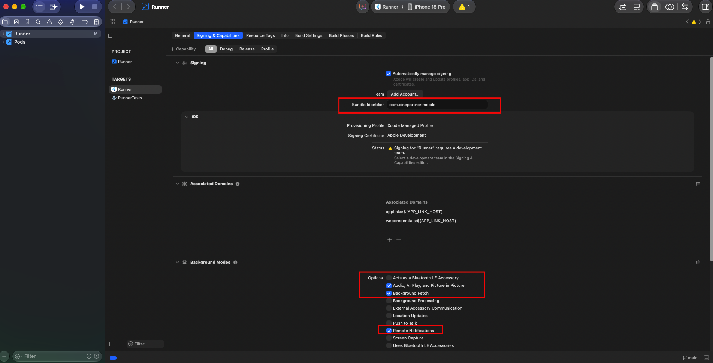
applinks:$(APP_LINK_HOST)) and Background Modes (audio/AirPlay/Picture in Picture, background fetch, remote notifications) are already set. The example has no Team selected, so its signing warning must be resolved before a device/archive build. · Open full-size image- Select the Runner target in the project navigator.
- Go to Signing & Capabilities.
- Select your Team (Apple Developer account).
- Change the Bundle Identifier to your own (for example
com.yourcompany.streaming).
3. Update the display name
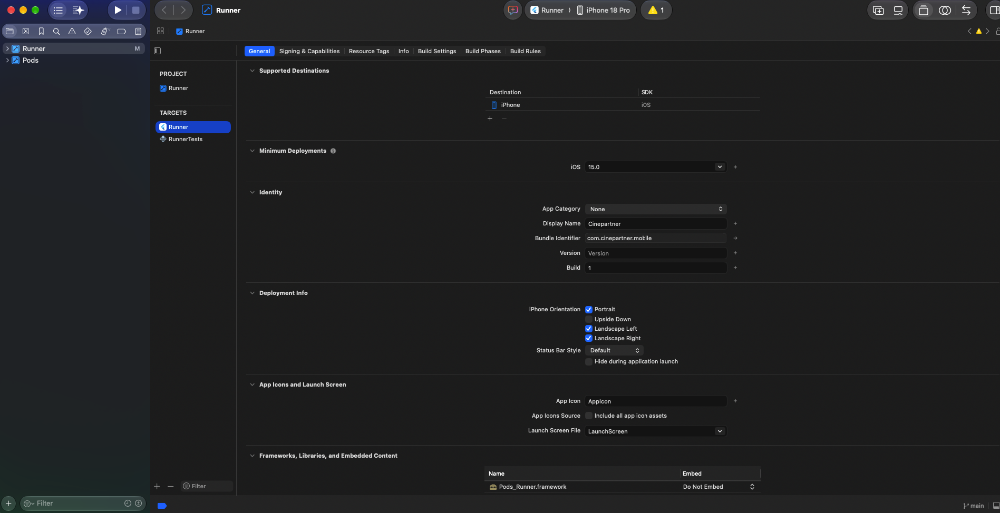
- Go to the General tab.
- Change Display Name to your app name.
- Set the Deployment Target to iOS 15.0 or higher.
4. Update Info.plist
Open ios/Runner/Info.plist and update:
<key>CFBundleDisplayName</key>
<string>Your App Name</string>
<key>CFBundleName</key>
<string>Your App Name</string>Step 2: Register the iOS App in Firebase
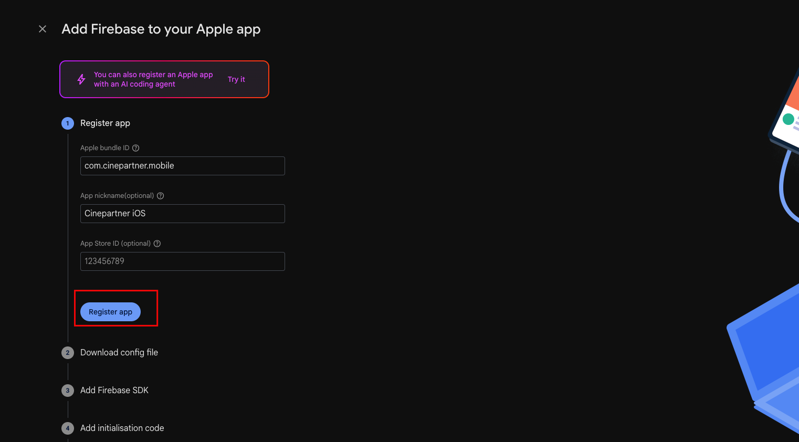
com.cinepartner.mobile · Open full-size image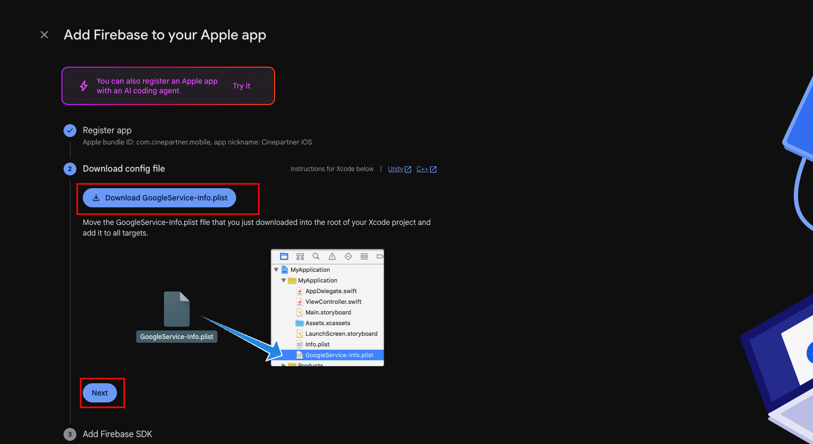
GoogleService-Info.plist and place it in ios/Runner/ · Open full-size image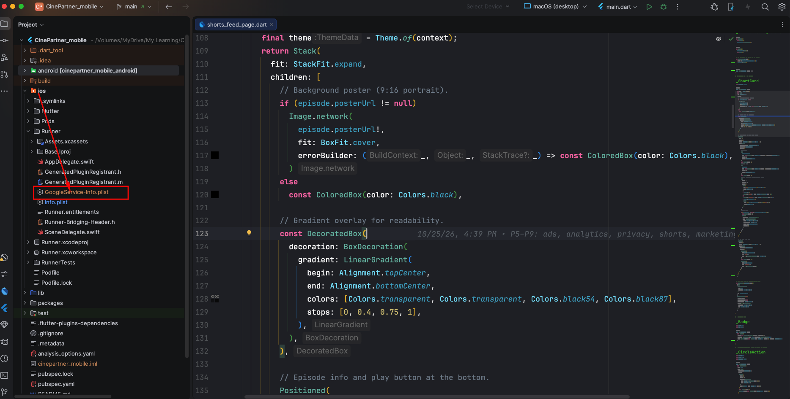
GoogleService-Info.plist in ios/Runner/; the Copy Firebase Config build step bundles it with the app · Open full-size imageUse the same Firebase project you created in Admin Panel: Firebase.
- In the Firebase project, click Add app and choose the iOS icon.
- Enter the bundle identifier from Step 1 (default
com.cinepartner.mobile). - Download
GoogleService-Info.plistand place it inCinePartner_mobile/ios/Runner/. A build step bundles it into the app automatically, so you do not need to add it in Xcode.
GoogleService-Info.plist to a public repository; it is listed in .gitignore.
Step 3: Configure the Backend URL
The iOS app reads the server address the same way as Android: pass --dart-define=API_BASE_URL=https://yourdomain.com when you run or build it. See Android App → Step 5 for the Android Studio run configuration, which also applies when you choose an iOS Simulator there.
cd CinePartner_mobile
flutter run -d <device> --dart-define=API_BASE_URL=https://yourdomain.comWithout the argument, debug builds on the iOS Simulator connect to http://127.0.0.1:8000, the backend on your Mac. A real iPhone cannot reach that address, so pass your server's address when you test on a device.
https:// URL. The app throws a StateError at launch if you pass an HTTP URL in release mode.
Step 4: App Icon & Splash Screen
The mobile app's icon and splash configuration in Android App → Step 6 already includes iOS (ios: true and remove_alpha_ios: true). Running the two commands once updates both platforms:
cd CinePartner_mobile
dart run flutter_launcher_icons
dart run flutter_native_splash:createOn iOS this regenerates ios/Runner/Assets.xcassets/AppIcon.appiconset/, the LaunchImage assets and LaunchScreen.storyboard. Use a 1024×1024 PNG source icon; App Store icons must not contain transparency.
Step 5: Push Notifications (APNs)
For push notifications on iOS, you need to upload your APNs authentication key:
- In the Apple Developer Console, create an APNs Auth Key (Key ID + .p8 file).
- In Firebase → Project Settings → Cloud Messaging → iOS app, upload the APNs key.
- Enter your Team ID and Key ID.
- In Xcode, open Runner → Signing & Capabilities and select your Team. The Push Notifications capability is already set in
Runner.entitlements.
Verify push on iOS
- Rebuild and open the app, sign in, and tap Allow when it asks to send notifications. The app registers the device with your server right after sign-in.
- Put the app in the background and send a push campaign from Admin → Marketing → Campaigns to a segment that includes your account.
- Confirm the notification appears, and that tapping it opens the linked page in the app. While the app is open, iOS shows the notification as a banner.
Step 6: Run & Verify the App
Start a simulator and run the app:
open -a Simulator
cd CinePartner_mobile
flutter runTo run on an iPhone, connect it, select your Team in Xcode (Step 1), then pick it with flutter devices and flutter run -d <device>. Check that content loads from your backend, sign-in completes, a title plays and a test push arrives, as in the Android verification table.
Step 7: Build & Archive for the App Store
cd CinePartner_mobile
flutter build ios --release \
--dart-define=API_BASE_URL=https://yourdomain.comThen open Xcode, select Product → Archive and upload to App Store Connect via the Organizer.
iOS configuration checklist
- Set the correct bundle identifier in Xcode.
- Place
GoogleService-Info.plistinios/Runner/(bundled automatically at build time). - Configure signing with your Apple Developer certificate.
- Set the deployment target (iOS 15.0 minimum).
- Review the privacy description in
Info.plist:NSLocalNetworkUsageDescriptionexplains why the app looks for Cast devices on the Wi-Fi network.
Step 8: App Store Submission Checklist
- Archive uploaded via Xcode Organizer or Transporter
- App Store Connect listing: screenshots (6.7", 6.5", 5.5" iPhone + iPad)
- Privacy details and App Privacy questionnaire
- In-App Purchase products created (see Apple In-App Purchase)
- Review notes with demo credentials
Troubleshooting
| Problem | Solution |
|---|---|
| iOS signing error | Check Xcode signing settings; ensure provisioning profile matches bundle ID |
| CocoaPods fails | Run cd ios && pod install --repo-update |
| Push notifications not received | Check that the APNs key is uploaded in Firebase, a Team is selected in Xcode, the bundle ID in GoogleService-Info.plist matches the app, and you are testing on a real device or an Apple silicon Mac simulator |
White-Label & Branding
CinePartner is fully white-label. Every customer-facing surface — mobile apps, TV app, web viewer, admin panel and partner portal — can be rebranded to match your identity.
Backend Branding
The backend branding is configured in Admin → Settings → Branding:
- Product name: Displayed in emails, invoices, and the web footer.
- Brand color: Used as the primary accent across the admin and web interfaces.
- Support email: Appears in error pages and transactional emails.
- Logo: Upload your logo in Admin → Settings (used in emails and PDF statements).
Additional branding in .env:
APP_NAME="Your Brand Name"
APP_URL=https://yourdomain.comMobile App Branding
Android
- Replace the launcher icon in
android/app/src/main/res/mipmap-*directories. - Update
android:labelinandroid/app/src/main/AndroidManifest.xml. - Change the package name in
android/app/build.gradle.kts. - Update colors in
packages/cinepartner_core/lib/core/theme/app_theme.dart.
iOS
- Replace the app icon in
ios/Runner/Assets.xcassets/AppIcon.appiconset/. - Update the display name in Xcode → Runner target → General → Display Name.
- Change the bundle identifier in Xcode.
- Update the launch screen in
ios/Runner/Assets.xcassets/LaunchImage.imageset/.
TV App Branding
- Replace the TV banner and icon in
CinePartner_tv/android/app/src/main/res/. - Update
android:labelinandroid/app/src/main/AndroidManifest.xml. - Customize the TV color scheme in
packages/cinepartner_core/lib/core/theme/app_theme.dart(AppTheme.tv). - Update the leanback launcher icon (320×180 banner required for Android TV).
Web Theming
The web viewer uses Tailwind CSS with a customizable color palette. Edit the CSS variables in resources/css/web.css:
/* Brand color is set in Admin → Settings and exposed as --brand. */
/* Optional source-level surface changes inside @theme: */
/* Surface colors (dark theme) */
--color-ink-900: #0a101e;
--color-ink-800: #121c32;
--color-ink-700: #18243f;After editing, rebuild assets:
npm run buildAdmin Panel Theming
The admin panel shares the backend's brand color setting. Additional customization:
- Replace the admin logo via Admin → Settings → Branding.
- The accent color follows the brand setting; edit
resources/css/admin.cssfor deeper layout or typography changes. - Edit
resources/css/admin.cssand runnpm ci && npm run buildfor custom admin styles.
Partner Portal Theming
The partner portal inherits the admin panel's branding. Partners see your brand name and logo when managing their content and viewing statements.
Branding Checklist
| Item | Location | Format |
|---|---|---|
| App name | Admin Settings + .env + mobile AndroidManifest.xml | Text |
| Mobile icon (Android) | mipmap-* directories | PNG (48–192px) |
| Mobile icon (iOS) | Xcode Assets | PNG (1024×1024) |
| TV banner | CinePartner_tv/android/app/src/main/res/ | PNG (320×180) |
| Brand color | Admin Settings + CSS variables | Hex color |
| Logo | Admin Settings upload | SVG or PNG |
| Splash screen | iOS LaunchImage + Android launch | PNG |
| Favicon | public/favicon.ico | ICO / PNG |
| Email header | Admin Settings | PNG (600px wide) |
Store & Billing
CinePartner supports Stripe and optional bKash for web checkout, Google Play Billing for Android, and Apple In-App Purchase for iOS. All transactions flow through a unified double-entry ledger.
Stripe (Web Checkout)
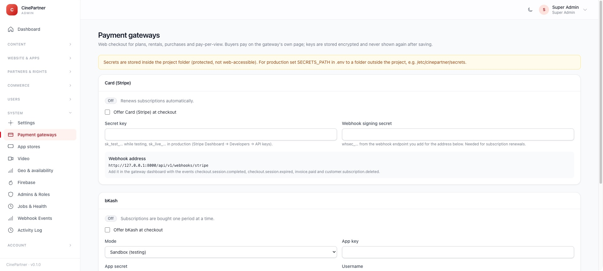
- Create a Stripe account and start in test mode.
- In CinePartner open Admin → System → Payment gateways. Confirm your admin password if prompted.
- Under Card (Stripe), enable the checkout option and enter the test secret key (
sk_test_…) from Stripe Dashboard → Developers → API keys. - In Stripe, register the HTTPS webhook address displayed by CinePartner:
https://yourdomain.com/api/v1/webhooks/stripe. - Copy that endpoint's signing secret (
whsec_…) into Webhook signing secret and click Save. Empty secret fields keep an existing saved value.
Subscribe to checkout.session.completed, checkout.session.expired, checkout.session.async_payment_succeeded, checkout.session.async_payment_failed, invoice.paid, invoice.payment_failed, customer.subscription.updated and customer.subscription.deleted. Keep the payments queue running.
Credentials are stored in the encrypted backend secret store through this form. This release does not read Stripe keys from the old STRIPE_KEY/STRIPE_SECRET environment examples. After testing, save live credentials and the live webhook signing secret using the same form.
bKash (optional web gateway)
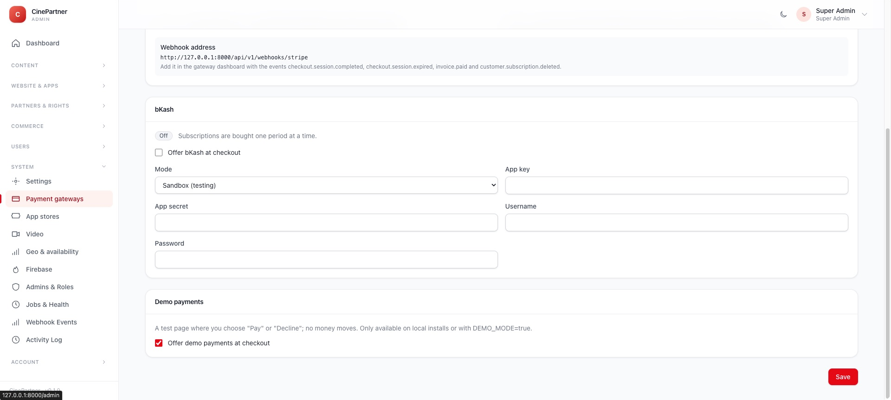
The same page includes bKash. Select Sandbox or Live and enter the app key, app secret, username and password issued for your merchant integration, then enable and save it. Use the merchant's sandbox credentials for testing; obtain production access directly from bKash before enabling live checkout.
| Gateway field | What to enter |
|---|---|
| Stripe → Secret key | Your Stripe server-side API key: use sk_test_… for testing and sk_live_… for production. |
| Stripe → Webhook signing secret | The whsec_… secret belonging to the endpoint registered for this website. It is different from the API key. |
| bKash → Mode | Sandbox for testing; Live only after merchant production access is approved. |
| bKash → App key, App secret, Username, Password | The four integration credentials supplied by bKash for the selected environment. Use the merchant integration password, never a customer's wallet PIN or OTP. |
Google Play Billing
- In Google Play Console, create products for the Android package you will publish.
- Enable the Google Play Android Developer API in your Google Cloud project. Invite the service-account email to Play Console with View financial data and Manage orders and subscriptions access for the app.
- Open Admin → System → App stores. In Google Play enter the final Android package name, upload the service-account JSON and click Save.
- Create a Pub/Sub topic, grant Google's Play notifications publisher permission, and select the topic in Play Console → Monetization setup.
- Create a push subscription using the full notification address displayed by CinePartner, including its private token query. Copy this address privately into Google Cloud; never put it in public docs, screenshots or Flutter source.
- Send a test notification from Play Console and inspect Admin → System → Webhook Events and the
paymentsqueue.
Configure plan/offer product mappings in Admin → Commerce → Offers & Prices. Use the exact store product ID and, for a Google subscription, its base plan ID. A matching name alone does not create a store mapping. See Google's billing setup guide and RTDN reference.
Apple In-App Purchase
- In App Store Connect, create the iOS app and its subscriptions/IAP products.
- Under Users and Access → Integrations → In-App Purchase, create an In-App Purchase API key and securely download its
.p8file. Record the issuer ID and key ID. - In Admin → System → App stores, enter the bundle ID, issuer ID and key ID, upload the
.p8key, select Sandbox and save. - Copy CinePartner's App Store Server Notifications V2 address into the app's sandbox and production notification settings in App Store Connect. Use the exact address shown by the admin page.
- Map each product to an offer in Offers & Prices. Test using sandbox testers/TestFlight, then switch the backend environment to Production for launch.
This release uses App Store Server API credentials; an APPLE_IAP_SHARED_SECRET environment value does not configure this integration. See App Store Server API and Server Notifications.
Commission & Ledger
CinePartner uses a double-entry ledger with hash-chain integrity for all financial transactions.
| Channel | Fee reference | Operator action |
|---|---|---|
| Stripe | Official pricing | Use the rates for your account country, currency and payment method. |
| Google Play | Service fees | Check your programme eligibility and current billing terms. |
| Apple | Small Business Program and your App Store Connect agreements | Use the commission applicable to your agreement and region. |
Provider fees vary. The application's configured fee assumptions should be checked against actual settlement statements before closing royalty periods.
Revenue from all channels feeds into the royalty engine for partner payouts. The ledger tracks: gross revenue, platform commission, net revenue, royalty accruals and payout disbursements.
Testing End-to-End
Stripe
Use Stripe's test mode with test card numbers:
4242 4242 4242 4242— Successful payment4000 0000 0000 0002— Declined4000 0000 0000 3220— 3D Secure required
Google Play
Use license testing accounts in Google Play Console → Settings → License testing. Add tester email addresses to bypass real charges.
Apple
Create sandbox tester accounts in App Store Connect. Test on a real device signed into the sandbox Apple ID.
Troubleshooting
| Problem | Solution |
|---|---|
| Stripe webhook fails | Verify the saved signing secret in System → Payment gateways; check Webhook Events, the payments queue and storage/logs |
| Google Play purchase not acknowledged | Check both service-account permissions, the exact package/product IDs and the complete private RTDN push URL |
| Apple receipt validation fails | Check the saved issuer ID, key ID, .p8 key, bundle ID and Sandbox/Production setting in System → App stores |
| Subscription not activating | Check the queue worker is running — webhook processing happens in background jobs |
Providers & Integration Matrix
This section covers video delivery, payments, push notifications, geolocation and email setup, plus CDN hosting choices and the current DRM limitation. Use the official provider links to check service availability and pricing.
Video Providers
| Provider | Setup | Official reference |
|---|---|---|
| Cloudflare Stream | Admin → System → Video: account ID, customer code, Stream: Edit API token and webhook signing secret. Select the provider, save and test it. Register https://yourdomain.com/api/v1/webhooks/cloudflare-stream in your Stream account. Existing videos keep their original provider. | Setup; usage pricing |
| Self-managed HLS | Admin → System → Video: select Self-managed, set FFmpeg/FFprobe paths when needed, save and test. Keep the media queue running. Video storage, CPU and bandwidth are your responsibility. | FFmpeg documentation |
Payment Gateways
Use the Store & Billing guide for Stripe, bKash, Google Play and Apple configuration. Confirm merchant eligibility, settlement currencies and current fees directly with the provider before launch. Demo checkout is for local evaluation and does not move money.
Push Notifications
FCM HTTP v1 sends push notifications to configured apps. Follow Firebase Setup, request device notification permission and send a test campaign. The Laravel web viewer does not register a Firebase web app or implement web push in this setup. See FCM documentation and Firebase pricing for service limits and other billable Firebase products.
Geolocation
Configure Admin → System → Geo & availability. For a CDN country header, use the header name supplied by your CDN (for example CF-IPCountry) and configure TRUSTED_PROXIES in .env with the actual proxy IPs/CIDRs. For MaxMind, save your license key in the admin page and configure the database update. See MaxMind GeoIP documentation and GeoLite licensing. Do not trust arbitrary client-supplied country headers.
DRM (Digital Rights Management)
The bundled Cloudflare Stream and self-managed providers currently advertise DRM: unavailable in System → Video. They support signed playback URLs. Signed URLs do not provide Widevine/FairPlay encryption. A third-party DRM service and compatible packaging/player integration require separate implementation and testing; no turnkey multi-DRM service is included.
CDN (Content Delivery Network)
Cloudflare Stream includes video delivery for videos hosted there. For other hosting, select a CDN compatible with your origin and signed playback routes; do not cache private API responses as public content. Compare current terms and usage rates at Cloudflare, Amazon CloudFront and bunny.net. These are hosting choices, not automatically configured integrations.
The default mailer writes messages to logs. For actual delivery, obtain SMTP credentials from your provider and edit the backend .env:
MAIL_MAILER=smtp
MAIL_SCHEME=smtp
MAIL_HOST=smtp.your-provider.com
MAIL_PORT=587
MAIL_USERNAME=your-smtp-username
MAIL_PASSWORD="your-smtp-password"
MAIL_FROM_ADDRESS="noreply@yourdomain.com"
MAIL_FROM_NAME="Your Brand"- Use the host, scheme and port issued by your provider (for implicit TLS, providers commonly specify
smtpsand port465). Configure SPF/DKIM for your sending domain according to its instructions. - Run
php artisan config:clear, then restart your queue workers. - Request a password-reset message for your own test viewer account. Confirm receipt and inspect provider delivery logs if it fails. Use a local mail catcher for local testing.
SMTP works with providers offering SMTP access, including Mailgun, Amazon SES and Postmark. Native API transports can require additional Composer packages and configuration; switching MAIL_MAILER alone does not install them.
Plan Your Operating Costs
Provider prices change and depend on country, usage and account agreements. Links in this section were added on 27 October 2026; follow the official pricing pages for current quotes.
| Cost | How to estimate it |
|---|---|
| Server and storage | Hosting quote + backups + media storage + transcoding capacity. |
| Video delivery | Stored video minutes × storage rate + delivered minutes/bandwidth × delivery rate. |
| Email and optional services | Expected usage × provider rate, plus any base plan. |
| Payments | Actual transaction fees, store commissions, currency conversion and any applicable taxes. |
| Store memberships | Separate Google Play/Apple enrolment fees under their current terms. |
Use your own expected viewing traffic and settlement currencies. No fixed monthly total or universal net-revenue percentage is guaranteed.
Upgrade Guide
CinePartner follows semantic versioning (semver): MAJOR.MINOR.PATCH.
| Version Part | Meaning |
|---|---|
| MAJOR (1.x → 2.x) | Breaking changes — read the release notes carefully |
| MINOR (1.0 → 1.1) | New features, backward compatible |
| PATCH (1.0.0 → 1.0.1) | Bug fixes, no new features |
Updates are distributed through Envato downloads. CinePartner never downloads remote code — you place the new files yourself.
Before You Upgrade
1. Read the Changelog
Every release includes a changelog. Check for breaking changes, new .env variables, new dependencies and migration notes.
2. Back Up Your Database
Use a private backup directory outside the project and public document root. These examples use the deployment user's home directory; keep the same terminal open so the backup variables remain available. Pause writes and let workers finish before taking a consistent database/files/secret snapshot. For a live service, use your hosting provider's coordinated backup process.
cd /var/www/cinepartner
php artisan down
sudo supervisorctl stop cinepartner-worker:*
umask 077
CINEPARTNER_BACKUP_DIR="$HOME/cinepartner-backups"
CINEPARTNER_BACKUP_STAMP=$(date +%Y%m%d_%H%M%S)
mkdir -p "$CINEPARTNER_BACKUP_DIR"
chmod 700 "$CINEPARTNER_BACKUP_DIR"
mysqldump --single-transaction --no-tablespaces -u cinepartner -p cinepartner \
> "$CINEPARTNER_BACKUP_DIR/database_$CINEPARTNER_BACKUP_STAMP.sql"3. Back Up Your Files
sudo tar czf "$CINEPARTNER_BACKUP_DIR/application_$CINEPARTNER_BACKUP_STAMP.tar.gz" \
--exclude='cinepartner/vendor' \
--exclude='cinepartner/node_modules' \
-C /var/www cinepartner4. Back Up the Secret Store
sudo tar czf "$CINEPARTNER_BACKUP_DIR/secrets_$CINEPARTNER_BACKUP_STAMP.tar.gz" \
-C /etc/cinepartner secretsAfter all three snapshots complete, resume the application before starting the separate upgrade procedure below:
sudo supervisorctl restart cinepartner-worker:*
php artisan upKeep the three matching backup files together in encrypted backup storage. Confirm that each archive can be listed and retain a separate off-server copy. Do not put a backup archive inside the application directory being archived.
Upgrade Steps
Step 1: Download the New Release
Download the latest version from your Envato purchase page (CodeCanyon → Downloads → CinePartner).
Step 2: Upload New Files
Replace the example version with your downloaded release. Extract it into an empty staging directory and confirm the expected main/CinePartner_backend/ folder exists. Keep maintenance mode on while replacing files:
cd /var/www/cinepartner
php artisan down
sudo supervisorctl stop cinepartner-worker:*
mkdir -p /tmp/cinepartner-new
unzip /path/to/CinePartner-v0.2.0.zip -d /tmp/cinepartner-new/
rsync -avz --delete \
--exclude='.env' \
--exclude='storage/' \
--exclude='vendor/' \
--exclude='node_modules/' \
--exclude='bootstrap/cache/' \
/tmp/cinepartner-new/CinePartner-v0.2.0/main/CinePartner_backend/ \
/var/www/cinepartner/Step 3: Install Updated Dependencies
cd /var/www/cinepartner
composer install --no-dev --optimize-autoloader
npm ci && npm run buildFor an unchanged release, the uploaded public/build/ assets are already compiled and you can omit the npm line. Rebuild when applying your own frontend source changes.
Step 4: Run the Upgrade Command
php artisan cinepartner:upgradeThis command enters maintenance mode, runs new database migrations, re-seeds roles/permissions, clears and rebuilds caches, publishes assets, updates the version marker and leaves maintenance mode.
| Flag | Purpose |
|---|---|
--force | Skip the confirmation prompt (for CI/CD) |
--skip-backup-check | Don't show the backup reminder |
Step 5: Restart Queue Workers
sudo supervisorctl restart cinepartner-worker:*Step 6: Verify
- Check the admin dashboard for warnings.
- In Admin → System → Jobs & Health, verify the scheduler heartbeat is green.
- Test a key flow (e.g., browse → play → checkout).
Purchase-Code Verification (Optional)
Find your purchase code in Envato → Downloads → the item → License certificate & purchase code. Keep it private and share it only through the author's private support channel when requested. The current installer and upgrade command do not prompt for a purchase code; no Envato personal token is needed to follow this guide. Documentation is readable without purchase-code verification.
Rollback
Option A: Restore from Backup
Replace the example timestamp with the matching database/application/secrets backup set. Supervisor must already be configured as shown above. Allow an in-progress media job to finish; its graceful stop can take longer than a normal web job.
cd /var/www/cinepartner
CINEPARTNER_BACKUP_DIR="$HOME/cinepartner-backups"
CINEPARTNER_BACKUP_STAMP=YYYYMMDD_HHMMSS
php artisan down
sudo supervisorctl stop cinepartner-worker:*
sudo tar xzf "$CINEPARTNER_BACKUP_DIR/application_$CINEPARTNER_BACKUP_STAMP.tar.gz" -C /var/www
sudo tar xzf "$CINEPARTNER_BACKUP_DIR/secrets_$CINEPARTNER_BACKUP_STAMP.tar.gz" -C /etc/cinepartner
mysql -u cinepartner -p cinepartner < "$CINEPARTNER_BACKUP_DIR/database_$CINEPARTNER_BACKUP_STAMP.sql"
composer install --no-dev --optimize-autoloader
php artisan config:clear && php artisan route:clear && php artisan view:clear
php artisan up
sudo supervisorctl restart cinepartner-worker:*Restore the matching private secret-store backup if it changed, preserving the backed-up APP_KEY. Keep backups outside the public document root. On cPanel, pause/re-enable the queue cron instead of using Supervisor. The upgrade command does not restore database/files automatically; the restore steps above are the rollback procedure.
Option B: Revert Files Only
If migrations were backward-compatible, you can revert just the files and rebuild caches without restoring the database.
Automated Upgrades (CI/CD)
#!/bin/bash
set -e
cd /var/www/cinepartner
# Extract the purchased release to /tmp/cinepartner-new before this script.
# If you keep a private Git deployment, use your own reviewed release ref.
php artisan down
sudo supervisorctl stop cinepartner-worker:*
rsync -av --exclude='.env' --exclude='storage/' --exclude='vendor/' \
--exclude='node_modules/' --exclude='bootstrap/cache/' \
/tmp/cinepartner-new/CinePartner-v0.2.0/main/CinePartner_backend/ ./
composer install --no-dev --optimize-autoloader
npm ci && npm run build
php artisan cinepartner:upgrade --force --skip-backup-check
sudo supervisorctl restart cinepartner-worker:*Update Schedule
| Type | Frequency | Content |
|---|---|---|
| Patch | As needed | Bug fixes, security patches |
| Minor | Monthly | New features, improvements |
| Major | Rare | Architectural changes (with migration path) |
Subscribe to release notifications on CodeCanyon to be notified of new versions.
Support & Frequently Asked Questions
For author support, open the CinePartner item page from your CodeCanyon downloads and use its Support tab. The item page identifies whether support is offered and its official contact channel. The sample support@cinepartner.test address is demo data, not a working support inbox.
For supported items, support covers questions about included features, reported bugs and included third-party assets. Custom development, installation services and hosting administration are separate arrangements. Check the item's support status and the Envato Item Support Policy; no response-time guarantee is made here.
What to include in a private support request
- Product version, affected platform and PHP/Flutter/toolchain versions.
- Steps to reproduce, expected result and actual result.
- A redacted screenshot and relevant error lines from
storage/logs/laravel.logor Flutter output. - For setup issues, whether the scheduler/worker heartbeats are recent and whether the provider is configured.
Never send full .env files, API keys, service-account files, signing keys, private webhook URLs or passwords in public comments. Share purchase verification only privately if the author requests it.
Why is the catalog empty?
A new installation has no published playable titles. Follow Publish Your First Video. For local evaluation only, run php artisan db:seed --class=DemoSeeder; on an FFmpeg-capable development machine, php artisan cinepartner:demo-media adds generated test-pattern clips to the free demo titles. These clips are not commercial films.
Why does my release app fail at startup?
Rebuild with the complete HTTPS API_BASE_URL command in Backend URL. Also verify Firebase files match your final app IDs. A physical device cannot reach your development computer using 127.0.0.1; use a reachable development URL or Android adb reverse tcp:8000 tcp:8000.
Why are emails not arriving?
The default MAIL_MAILER=log writes mail to logs. Configure an actual SMTP service using the Email setup, then check workers and your provider's delivery logs.
Do I need to edit Flutter code for every server change?
The API address is supplied at build time. Change the --dart-define value and rebuild/reinstall the app; changing the backend's APP_URL alone does not alter an already installed app.
Changelog
All notable changes to CinePartner are documented here. This project follows Semantic Versioning.
Version 1.0.0 – 27 October, 2026 (initial release)
- Laravel 13 backend with PHP 8.5, MySQL 8 and Redis 7 - Web installer with server preflight checks and database setup - Terminal installer via php artisan cinepartner:install - 48 database migrations with full schema for all modules - Demo seeder with sample content, plans and users - Encrypted secret store for Firebase keys and Stripe secrets - cPanel limited mode support (no Redis required) - Viewer registration: email/password, social sign-in - Two-factor authentication (TOTP) for admin roles - Sanctum API token authentication for all clients - Adult and kids profiles with age-gated content - Watch history, continue watching and watchlists - Session management with concurrent device limits - Full admin panel with responsive sidebar layout - Dashboard with real-time viewer and play metrics - Role-based access control with 9 built-in roles - 15-section Settings panel configurable from admin UI - Title types: movies, series, shorts, specials, documentaries - Rich metadata: genres, tags, moods, people, age ratings - Collections for editorial curation - Multi-step content review workflow (5 stages) - Cloudflare Stream integration with CDN delivery - Self-managed HLS video pipeline (FFmpeg, 360p–4K) - Resumable uploads with tus protocol - Shaka Player with custom controls and quality selector - Skip Intro, Skip Recap and Up Next overlays - Google Cast (Chromecast) integration - Concurrent stream control with lease-based limits - Signed HLS manifests for content protection - Country-based content availability (GeoIP) - Universal Links (iOS) and App Links (Android) - Home page rail editor with drag-and-drop rows - Promotional banners with deep links - Static pages editor (About, Terms, Privacy, FAQ) - Subscription plans (SVOD) with free trials and grace periods - TVOD: per-title rentals and one-time purchases - Stripe integration with automatic invoicing - Google Play Billing with RTDN via Pub/Sub - Apple In-App Purchase with Server Notifications V2 - Gift codes and coupon system - Tax configuration with inclusive/exclusive toggle - Contract management with revenue share and license terms - Rights windows with territory and platform restrictions - Double-entry financial ledger with hash-chain integrity - Royalty engine: SVOD pool and TVOD revenue share - Partner PDF statements and payout processing - Dual-approval payout workflow - Partner portal with KYB onboarding - Organization management with role-based access - Earnings dashboard with revenue breakdown - Live TV channels with EPG - XMLTV import for program schedules - Live events / PPV with ticketing and pricing - Live chat during events - Vertical short dramas for mobile-first content - Ad-supported tier with Google IMA SDK - VAST/VMAP ad tags configurable from admin - Kids profile COPPA compliance for ads - Push notification campaigns via FCM HTTP v1 - Audience segmentation and campaign scheduling - A/B experiment framework - Referral program with configurable rewards - Consent-gated analytics with 15-event catalog - Audience, content and revenue metrics dashboards - QoE telemetry: buffering ratio, startup time, bitrate - Reports with CSV and PDF export - Built-in support ticket system with SLA tracking - Content moderation with pre-moderation queue - GDPR data export and account deletion - Configurable data retention with automated purge - CSRF, XSS, SQL injection protection - Security headers and per-endpoint rate limiting - Flutter mobile app (Android + iOS) - Flutter TV app (Android TV / Google TV) - Web viewer (Blade + Alpine.js + Tailwind CSS 4) - Upgrade command with maintenance mode; documented manual backup restoration - 5 locale translations: English, Bengali, Hindi, Arabic, Spanish - Comprehensive test suite (480+ tests) - Build and verification scripts for Envato packaging
Credits & Third-Party Licenses
CinePartner uses the following open-source libraries and services. We gratefully acknowledge their authors and contributors. See the complete dependency inventory and locally collected license notices for exact locked versions, additional dependencies, original license text and resource URLs. Preserve the upstream notices when redistributing permitted components.
Backend (PHP / Laravel)
| Package | License |
|---|---|
| Laravel Framework | MIT |
| Laravel Sanctum | MIT |
| Laravel Scout | MIT |
| BaconQrCode | BSD-2-Clause |
| Dompdf | LGPL-2.1 |
| GeoIP2 PHP | Apache-2.0 |
| Google2FA | MIT |
| PHPUnit | BSD-3-Clause |
Frontend (JavaScript / CSS)
| Package | License |
|---|---|
| Tailwind CSS | MIT |
| Alpine.js | MIT |
| Shaka Player | Apache-2.0 |
| tus-js-client | MIT |
| Vite | MIT |
| Laravel Vite Plugin | MIT |
Mobile and TV Apps (Flutter / Dart)
Fonts
The web/admin/documentation styles use local system-font fallbacks. Inter and JetBrains Mono are font-family references, not a promise that font files are bundled. If you add these font binaries, include their upstream copyright and OFL notices.
| Font | License |
|---|---|
| Inter | SIL Open Font License 1.1 |
| JetBrains Mono | SIL Open Font License 1.1 |
Services (External, Not Bundled)
These services are supported but NOT included — you bring your own account:
- Cloudflare Stream — Video hosting and delivery (managed path)
- Stripe — Payment processing
- Firebase — Push notifications
- MaxMind GeoIP2 — Country detection
- Google Play / Apple App Store — In-app purchases and subscriptions
Demo Media, Artwork & Screenshots
| Resource | Source / inclusion | Usage notes |
|---|---|---|
| Generated demo posters/backdrops | CinePartner's DemoCatalogSeeder generates abstract artwork locally. | Generated sample artwork for evaluation; no third-party poster files are required by this seeder. |
| Generated demo video | cinepartner:demo-media generates an FFmpeg test pattern when no source file is supplied. | A technical playback sample, not the films named in an illustrative catalog. FFmpeg's own terms apply to the executable used. |
| App icon, TV banner, favicon and logo mark | Original CinePartner artwork: assets/branding/ in each app, public/favicon.* and apple-touch-icon.png in the backend. | Included under the item license. Replace it with your own brand before publishing (see App Icon & Splash Screen). |
| Documentation screenshots | Captures of the CinePartner admin, web viewer and third-party configuration tools; stored under assets/screenshots/. | Illustrate setup and example data. A movie title, poster or service shown in a screenshot does not grant rights to use or stream that content. |
| Commercial movies, studio artwork and services | Not licensed as streaming content by purchasing CinePartner. | Supply your own properly licensed media. Obtain separate service accounts and content permissions. |
Third-party service interfaces and trademarks remain the property of their owners. Follow the linked providers' documentation for current interfaces. The application license is in license/LICENSE in the download; see Envato's license terms.
All trademarks and brand names mentioned above belong to their respective owners and are used here solely for identification purposes.